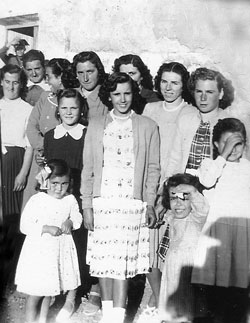

Con agradecimiento para Antonio Alpuente, su familia y sus amigos, salud y feliz día.
Tierras de labor de la Masía de Ligros, y roquedal del Campamento Escuela. Panorámica desde Peña de la Cruz (Foto de Salvador F. Cava)
1. Descripción de un espacio con nombre sugerido
De un Diccionario Geográfico: “Montes Universales es el nombre del sistema montañoso situado en el límite suroeste de la Cordillera Ibérica ocupando gran parte de la comarca aragonesa Sierra de Albarracín (Teruel) y la zona sureste del Alto Tajo, entre Guadalajara y Cuenca. Sus cumbres se sitúan entre los 1.600 y los 1.935 metros de Altitud. El conjunto de montes se disponen en dirección noroeste a sureste en el interior del arco interno ibérico. Limitan al noreste con el macizo paleozoico de Caimodorro y el de Loma Alta de Villar del Cobo, al suroeste con la serranía de Cuenca y al este con el valle del Guadalaviar. Su posición divide las cuencas hidrográficas del alto Tajo, que nace en el seno de los Montes Universales, y las levantinas que conforman el Turia (llamado Guadalaviar a su paso por la provincia de Teruel) o el Júcar. La cadena montañosa está formada de estratos del mesozoico en el sur que rodea al centro paleozoico de Albarracín. En ellos se observa la existencia de altiplanos calizos del jurásico con abundante karstificación en Loma Alta y Griegos, con proliferación de campos de dolinas y lapiaz. Al sur de este núcleo paleozoico se alinea una serie de sinclinales tabulares de origen cretácico que resaltan en cornisas karstificadas calcáreas (Muela de San Juan, de Frías, de Saldón, de Valdecuenca y de Javalón) y descienden en suaves valles en cuna, de formación periglaciar. El núcleo kárstico integra dolinas de hundimiento diseminadas, que contienen los cursos fluviales cuya cabecera se sitúa en estos montes. La Sierra de Albarracín, como comarca más definida, engloba a los municipios de Albarracín, Bezas, Bronchales, Calomarde, Frías de Albarracín, Gea de Albarracín, Griegos, Guadalaviar, Jabaloyas, Monterde de Albarracín, Moscardón, Noguera de Albarracín, Orihuela del Tremedal, Pozondón, Ródenas, Royuela, Rubiales, Saldón, Terriente, Toril y Masegoso, Torres de Albarracín, Tramacastilla, Valdecuenca, El Vallecillo y Villar del Cobo”.
Pero, además, para el momento histórico que aquí relatamos, también hemos de tener presente el espacio sur de la comarca de Teruel, que sigue la ruta del río Turia hasta adentrarse en el Rincón de Ademuz y mira hacia el norte desde la carretera nacional 420 de Cuenca a Teruel. El pueblo de Libros es su núcleo humano de referencia, pero aún lo son más para la condición de la guerrilla municipios como Villaespesa, Villastar, Villel, Rubiales, Tramacastilla, Mas de Jacinto, y tras sortear el entorno de Castielfabid, El Cuervo, Alobras o Tormón.
|
AÑO/MUNICIPIO |
1900 |
1920 |
1930 |
1940 |
1950 |
1960 |
1970 |
1981 |
ALOBRAS |
501 |
469 |
400 |
410 |
347 |
267 |
215 |
136 |
EL CUERVO |
506 |
430 |
390 |
416 |
361 |
327 |
247 |
179 |
JABALOYAS |
689 |
539 |
498 |
390 |
572 |
336 |
222 |
131 |
LIBROS |
642 |
1.308 |
1.691 |
1.241 |
939 |
573 |
377 |
259 |
RIODEVA |
700 |
740 |
747 |
782 |
740 |
619 |
383 |
307 |
TORMÓN |
232 |
248 |
314 |
242 |
198 |
164 |
118 |
58 |
TRAMACASTIEL |
638 |
574 |
505 |
538 |
454 |
409 |
240 |
148 |
VEGUILLAS |
271 |
167 |
183 |
189 |
150 |
108 |
62 |
49 |
Evolución de la población en algunos de los pueblos de referencia (Datos de Alfredo Sánchez Garzón, ed.)
La guerra civil en los Montes Universales había sido de calmas y de tempestades, intensa unas veces, a la espera otras, y cruel y hasta enigmática casi siempre. Un compendio disforme de voluntad y mérito entre posiciones de nadie y de cualquiera todos los días. Junto con otros tantos adjetivos todavía por añadir, e historiar. Las columnas de milicianos de Valencia, de Cuenca y de Madrid, y hasta de Cataluña, con “Tierra y Libertad”, hicieron frente a los sublevados de Teruel y sus refuerzos de los guardias de “La Calavera” o los civiles de las “Guerrillas de Aguado” con bastante presencia en la parte septentrional de la provincia de Teruel, además de los contingentes enviados desde otras líneas. El frente en buena medida se había establecido siguiendo el curso de los ríos Tajo y Cabriel. La zona norte para los nacionales y la sur para las columnas republicanas, la valenciana de extracción comunista Eixea-Uribes, desde Cubla hasta Bezas, y la madrileña libertaria del Rosal en la Serranía de Cuenca, desde Valdecebro hasta Cubla más en la Sierra de Albarracín. Posteriormente convertidas en las Brigadas Mixtas 57 y 58, y 59, 60 y 61 respectivamente. Leyendo a Cipriano Mera tenemos alguna idea aproximada del día a día aunque en demasía llano por estar entrevisto desde el visor de la simple dirección militar. He aquí unas muestras: “Una nueva reunión tuvo lugar el día 14 de octubre, en el local del Comité de Defensa, con el teniente coronel del Rosal, el comandante Torres, del Cuerpo de Asalto, Antonio Verardini y yo. Estando reunidos se presentó el comandante Palacios, de Sanidad militar. Se nos dijo que al día siguiente saldríamos para Aranjuez, pues se tenían noticias que desde Toledo avanzaban fuerzas enemigas en dirección a Madrid. Luego, merced a informaciones más recientes, se decidió otro destino: Tarancón. El 15 de octubre, conforme se había previsto, salieron de Madrid la Columna de Milicias Confederales del Centro y la Columna Tierra y Libertad, al mando ambas del teniente coronel del Rosal, llevando como segundo jefe al comandante Torres, de Asalto; el representante del Comité de Defensa era Manuel Valle y el delegado general, yo; el jefe de Estado Mayor era Verardini, y Resa su segundo jefe. La Columna Tierra y Libertad, compuesta de ocho centurias, tenía como delegado a Germinal de Sousa; el Batallón «Mora», con seiscientos cincuenta hombres, estaba bajo el mando del capitán Esteban, con Parra como delegado; el Batallón «Juvenil», también con seiscientos cincuenta hombres, iba mandado por el teniente coronel Orrios, y como delegado Manuel Domínguez; el Batallón «Orobón Fernández», integrado por seiscientos hombres, estaba al mando del comandante Palacios, con Manuel Arenas de delegado, y el Batallón « Ferrer» aparecía mandado por Antonio Cantos, con Carlos Sanz como delegado. Disponíamos de una batería de tres piezas, dos del 7,5 al mando del comandante Resilla y el capitán Esteller, y una del 10,5 mandada por dos extranjeros que había designado Tierra y Libertad; la Intendencia corría a cargo de Nicasio González Inestal y los servicios de Sanidad estaban bajo el mando del doctor Uribe... Salieron, pues, para Cuenca, los batallones «Mora», «Ferrer» y «Orobón Fernández»; la Columna Tierra y Libertad se fue hacia Priego; el Batallón «Juvenil» y la batería del 10,5 se quedaron en Tarancón de reserva, así como el teniente coronel Orrios, que se hizo cargo de la Comandancia de la plaza. Tuvimos enseguida una reunión con el Estado Mayor para inquirir las causas del cambio. El teniente coronel del Rosal nos dijo que se trataba de asegurar las comunicaciones por la parte norte de Cuenca y tomar el nudo de comunicaciones de Gea de Albarracín, así como aproximarnos a Santa Eulalia y amenazar Teruel, para obligar de esta manera al enemigo a modificar su plan de ataque en dirección a Madrid. Concluida la reunión, el comandante
|
|
| Cipriano Mera a la derecha con niños en jarras. Y Francisco del Rosal con su esposa (Internet) |
Torres, el capitán Arderíus, el ayudante del teniente coronel y yo salimos en reconocimiento para Beteta (Cuenca), dando con el enemigo en Peralejos de las Truchas. El comandante Palacios, Parra y Verardini hicieron lo mismo en dirección de Royuela y descubrieron las tropas enemigas al noreste de Gea de Albarracín; seguidamente establecieron contacto con una columna nuestra establecida en Royuela al mando del coronel Eixea, del Ejército de Levante. A su vez Germinal de Sousa y un capitán salieron para Villanueva de Alcorón y Zaorejas, observando que el adversario se hallaba al otro lado del Tajo. Por último, yo mismo envié a José Mera y Artemio con dos buenos conocedores del terreno para ver en qué situación se encontraban Tragacete y Huélamo, hallando sólo unos escopeteros en Guadalaviar, Griegos y Villar del Cobo… Se proyectó para el 25 de octubre un reconocimiento sobre Albarracín. Pero llegado ese día, el comandante Palacios ordenó a sus hombres comprobar la situación reinante al norte y este de Albarracín, así como en la parte de Noguera, para ver si resultaba posible ocupar este pueblo, y, en efecto, se ocupó, cayendo además en nuestro poder unos veinte escopeteros. Por eso se aplazó hasta el día siguiente la operación de reconocimiento sobre Albarracín, interviniendo en ella dos compañías del Batallón «Ferrer», otras dos del Batallón «Mora» y una batería del 7,5 al mando del comandante Resilla. De reserva quedó otra batería en Royuela al mando del capitán León, así como dos compañías del Batallón «Mora» en Tramacastilla y otras dos del «Ferrer» en la bifurcación de la carretera de Royuela a Tramacastilla. El objeto era tomar las alturas existentes frente a Albarracín y cortar las comunicaciones con Teruel” (Cipriano Mera, ed.).
Plano de operaciones militares en la Sierra de Albarracín (Guerra civil en Aragón, ed.)
En esta tesitura del conflicto armado, la toma de Teruel, desde sus inicios en diciembre de 1937 y su recuperación por las tropas sublevadas en febrero de 1938, fue un momento importante y hasta decisivo en la contienda. En todas las previas las fuerzas republicanas, primero en forma de milicias y posteriormente como ejército popular, se posicionaron en la franja descrita. Del mismo modo las avanzadillas nacionales, desde su plaza dominante de Zaragoza y el corredor hacia Teruel se expandieron hacia la zona con el consiguiente repliegue de las unidades de la República. De otoño de 1936 a verano de 1937 no deja de haber escaramuzas de posicionamiento, y en agosto de 1938 hay otra ofensiva republicana, de apenas unos días de duración en la zona del Alto Tajo, al tiempo de la batalla del Ebro. En el mes de octubre de 1936 las fuerzas de la República habían realizado un ataque a Albarracín, que se repetiría también en julio de 1937. En este mismo mes, el 18 de julio del 37 los Nacionales tomarían Bronchales, y el 21 y el 22 Noguera, Tramacastilla, Griegos, Guadalaviar y Torres de Albarracín; el día 25 Royuela, y el resto del mes los pueblos próximos.
En los municipios con periodos de control republicano se instaura el comité gestor, y el sindicalismo con base en la UGT y la CNT toma posiciones de compromiso. El seguimiento de sus acciones viene marcado en lo posible por las decisiones del Consejo General de Aragón y por los mandos militares cercanos. La inmediatez del conflicto hace que se tomen medidas de requisas de bienes de gentes de derechas que se han pasado al bando nacional o de las que se tiene la certeza que son conocidos militantes de los partidos que apoyan el levantamiento, se les retiren las armas, se les detenga en bastantes casos, y que se quemen las imágenes al hilo de la presencia de grupos de milicianos. Ya en el mes de agosto de 1936, en El Vallecillo o en Alobras y en los pueblos de alrededor llegan las tropas rojas y destruyen la iglesia. En Tramacastilla acaece el día 12 de octubre. Toda esta lectura puede verse siguiendo el guión de la Causa General instruida desde el año 1940 hasta bien entrada la década de los sesenta. Pero además, en su memorabilia de declaraciones y testificaciones acusatorias hay algo más que la reconstrucción histórica. También asistimos, en su lectura, al ejercicio del poder y la represión a cuenta de dolor. Del mismo modo, y a pesar de las dificultades historiográficas, llenaríamos páginas parecidas si situamos las razzias falangistas en los pueblos nombrados y ubicamos el traslado y fusilamiento de vecinos, durante el propio conflicto, al cementerio de Teruel, o a fosas comunes como la de Caudé, (sin la necesidad de citas de más allende) y otras en los ribazos de carreteras y campos de labor. Ni qué decir tiene que una segunda ola de represión sobre el cuerpo republicano se aprecia en el corpus de la propia Causa General cuando se enumera a los simpatizantes de izquierda que figuran como componentes de corporaciones o sindicatos y en los primeros años 40 se les ubica en prisión, en Zaragoza generalmente, pero también en Cuenca, Valencia, Burgos, Ocaña…, y hasta se les numera como fusilado.
2. La Causa General
Lo más destacado de los años de la guerra en la geografía de la Sierra de Albarracín donde luego se asentaría el maquis, con la atenuante y el dolor de que los fríos datos nunca reproducen la verdad, nos indican que en El Vallecillo hubo dos muertos el 2 de octubre de 1936, el alcalde y el secretario, Vicente Soriano y Pedro Escriche. En Villel fueron 15 los fallecidos, la mayoría en 1936, además de otros cinco vecinos de los pueblos cercanos. Algún paisano, Adolfo Cebrián Alegre, moriría en la defensa de Teruel, en concreto en el seminario, uno de los últimos lugares tomados por la ofensiva republicana. En algunos casos se dio la circunstancia propia de la guerra de esconderse en el monte tras la entrada de las diversas tropas, y ante el bando promulgado de regresar al pueblo, los más comprometidos no hicieron caso por lo que las patrullas de reconocimiento del terreno, comunes con las que buscaban desertores o gentes que se pasaban de frente, al dar con ellos, y tras los más que posibles cruces de disparos, falleciesen. En la zona norte Tramacastilla fue el centro de operaciones de la Columna Rosal. Hasta dicho pueblo se llevaron a los detenidos de los vecindarios próximos. Del propio Tramacastilla cuatro fueron los vecinos fusilados, entre ellos el alcalde Enrique González (28 de octubre de 1936) y el maestro Juan Villanueva. Del resto de pueblos cercanos hasta 26 personas se contabilizan entre los fallecidos. De Villar del Cobo hubo dos muertos en Tramacastilla, entre ellos Miguel Lafuente Fornés, el 28 de noviembre de 1936, tras la llegada de la Columna Rosal, a quienes siempre se les echa la culpa, tras el pertinente visto bueno de los dirigentes del Comité, como es aquí a Valentín García García, Daniel Pérez Soriano, o Blas González López; y así, todos ellos, por lo común, detenidos tras la guerra, fusilados o en paradero desconocido. En Tramacastiel se reproduce el esquema de muerte de un vecino, Manuel Miguel de Gracia, en 25 de septiembre de 1936, además del saqueo de iglesia y ermitas, casas de particulares de derechas y detención de varios de ellos a quienes llevan a Villel. Del mismo modo se suele hacer recaer las tintas, por general, salvo en casos contados, en quien ya se sabe que está en Francia, ha fallecido en la guerra, o es conocido por todos su destacada función durante la presencia de las tropas de la República en el pueblo, en este caso sobre Alejandro García García. Por lo que se refiere a Tormón, el 30/8/36 se destruyen las imágenes como consecuencia de la orden que se da en el cuartel sito en Torrebaja, al mando de la columna Uribes. El 16 de diciembre de 1940, el alcalde franquista Eugenio Serrano firma lo que sigue sobre este suceso: “Obedeciendo a una orden dimanante del Cuartel General de fuerzas rojas, instalado en Torrebaja (Valencia), fue destruida la iglesia, en cuyo hecho viéronse obligados a participar casi la totalidad de los vecinos, siendo el primero que la profanó y aterrorizó al vecindario Cándido Asensio Simón, natural de esta villa y vecino de Barcelona, que se presentó como delegado de la CNT, quien se encuentra en la actualidad en Francia. Este cabecilla debe ser el responsable del citado delito, por las amenazas graves que profirió contra este reducido muy pacífico pueblo y vecindario, toda vez que sus habitantes, aun cuando habían recibido orden de destrucción antes de llegar él, manifestaron su propósito de no acatarla”. En Terriente encontramos cuatro muertes de vecinos (entre ellos la de Modesta Ibáñez, como represalia por que su marido se hubiese pasado a los nacionales) y otras tantas de personas de fuera, además de los consabidos saqueos y quema de imágenes a partir del 23 de agosto. Alguno de los acusados, como es el caso de Donato Rubio (en el servicio de información de su compañía) (se le supone preso en Cuenca), donde posiblemente viviría refugiado y volvería con la Columna Rosal. En Royuela se data algún muerto por cuestiones de celo laboral y rivalidades arrastradas desde antes de la guerra, como semeja acaecer en el destino del peón caminero Tomás Laguía Martínez, tal como describe su viuda Modesta Martínez Sáez. En Jabaloyas aparece datado un muerto, y los vecinos ajustician a su autor. Esta circunstancia acaece en agosto de 1936, el primero es Francisco Laguía, y el segundo Antonio Jarque. En agosto de 1936 entran las columnas republicanas bombardeando con proyectiles de mortero la población poco antes de tomarla.
Noguera, Guadalaviar y Griegos presentan una mayor incidencia. En noviembre de 1936, en Noguera, las tropas anarquistas habían entrado en el pueblo el día 28 de octubre, tras los consiguientes saqueos, se llevarán a Tramacastilla a varios vecinos, siendo fusilados 11 de ellos: el juez municipal, el
|
| Causa General (Valdecuenca), (AMH) |
secretario, el practicante, y otras gentes de derechas. Con el tiempo fueron acusados siete vecinos de facilitar las listas, entre ellos el futuro guerrillero Narciso Morón Sánchez, quien sería condenado a 30 años (Causa 5908-40) (Zaragoza). En la misma también figuran acusados otros vecinos del pueblo. Casi todos ellos formaron la Comisión Gestora Municipal: Juan Sáez Herraz, Víctor Sánchez Rueda, Telesforo Morón Cavero, Cayetano Sáez Valero y José Rueda Lozano. A Narciso Morón, nacido en 1916, afiliado a la UGT, se le acusará de haber enviado a Telesforo Morón desde Royuela, a donde había huido antes de la toma de Noguera por los nacionales, un listado de gentes de derechas de las cuales varias serían fusiladas por la Columna Rosal en Tramacastilla, y de haber participado como miliciano en la toma de Teruel y otros frentes. Desde la cárcel de Zaragoza pasará al Campo de Trabajo de Júbera (Soria) en el mes de julio de 1944, y a San Miguel de los Reyes (Valencia) donde estaría desde el 14 de agosto de 1945 al 17 de marzo de 1946. Poco después ingresaría en la AGL. Juan Sáez era el presidente de la Gestora. A Juan Molada se le acusa de ser quien acompañase a los milicianos que fueron a detener a los vecinos trasladados a Tramacastilla. También estará denunciado Agustín Ruiz López (“Matasiete”) de Campillo de Altobuey, quien conducía el camión. En Guadalaviar, el 26 de octubre entran las columnas milicianas en una escaramuza teatralizada, simulando ser fuerzas nacionales, dando gritos a favor de Franco y de Cristo Rey, para posteriormente detener a los que les vitorean. Al día siguiente las fuerzas libertarias se marcharon a Tramacastilla tras poner en libertad a los detenidos, no sin antes la consabida quema de imágenes. A Benigno Pérez Larrea lo nombran presidente del sindicato, con el fin de crear la colectividad que no se llega a constituirse, y a los dos meses se añade al Comité. Benigno Pérez, cuando toman los nacionales Guadalaviar, se marcharía a Tragacete y desde aquí a Cuenca, y por último a Gabaldón a donde se trasladaría su familia, y desde donde se incorpora al frente, terminando la guerra en Extremadura, en uno de los recorridos biográficos más que frecuentas en estos tiempos. En Griegos, los milicianos solían salir al monte y a quien detenían a veces lo fusilaban si encontraban resistencia. Llevaban como conocedores del terreno a gente de del mismo pueblo o de Guadalaviar. Julián Giménez Catalán sería el presidente del Comité. Reciben órdenes del Consejo General de Aragón y de los jefes militares de la zona.
|
| Causa General (Bronchales), (AMH) |
Sandalio Pino Sáez, natural de Tragacete, que vivía viudo en Guadalaviar en una casa de campo, llegará a estar evacuado en Cañamares. Los huidos solían ser de la provincia de Cuenca, de San Clemente y La Mancha. En Griegos hallamos la referencia de dos muertos, acusando al Comité de detenerlos, y conducirlos a Terriente. Encabeza su comité, todos ellos detenidos en Zaragoza, Vicente González Martínez “El Calores”. En septiembre de 1937 hay tres muertos foráneos, al tiempo de la llegada de la Columna Rosal, acusando a uno de sus integrantes de dicha acción, al “rubio” de Cuenca. En Griegos se presentan los republicanos el 26 de octubre de 1936. Fabián Royuela Escutia, natural de Zafrilla, vivía en Griegos, perteneció al Comité, y tras la guerra es detenido en su pueblo en mayo de 1939. Un integrante del Comité, el secretario y hornero Isidro Ibáñez García, acusa a las fuerzas de fuera, a la Columna Rosal, de los hechos: quema de imágenes y hasta muerte del derechista de falange Bartolomé Chavarrías. De todo ello hace responsable al capitán Joaquín Sancho, que mandaba la fuerza que condujo a Chavarrías a Torres, y al cabo andaluz José García Báez “que animó a los chicos del pueblo a que quemasen las imágenes de los santos, y se puso dicho cabo, ropas sacerdotales, del culto, haciendo mofa y escarnio de las mismas”. En junio de 1937 los nacionales se apoderan de Guadalaviar.
Dejamos para el final de este recuento descriptivo, de manera no significativa, por el momento que estamos abordando, El Cuervo, Valdecuenca y Bronchales. Lo hacemos así pues en nuestra mira de referencia general, la del maquis, tendrán un protagonismo especial los vecinos de estos tres pueblos a partir de 1947. En El Cuervo, el 15 de agosto de 1936 se queman las imágenes y altares de la Iglesia parroquial y ermitas, de San Pedro y San Roque. Se atribuye a las columnas que llegan de fuera, en referencia a la de Eixea Uribe, con sede de mando en Torrebaja, y organizada por el diputado Juan Antonio Uribe y el comandante José Pérez Martínez, y de la que se haría cargo el teniente coronel Manuel Eixea Vilar, no se destacan ni saqueos ni muertes. En lo que puede considerarse una norma más que general. En Valdecuenca, más al norte y hasta donde llegaría la Columna de Cipriano Mera, la del Rosal, se hace constar la muerte de Julián Ferrer Blasco, (29 de agosto de 1936) guarda forestal de Dornaque. Pero de esos tres pueblos, es en Bronchales donde más incidencias se registran. El desarrollo de la guerra en su término lo ha recordado, desde la ancianidad de antiguo falangista y con más que dosis de prudencia, Román Molada en un relato de sus memorias, del que extraemos unas líneas: “No sé cierto el día ni los soldados que llevó el comandante Aguado, pero sé que con muy pocas fuerza se apoderó del mando en Teruel. Enseguida vino la guardia civil por los pueblos y cambió los Ayuntamientos. En Orihuela, el alcalde se había ido a la siega y quedó el teniente-alcalde, que creo se llamaba Raimundo. Éste no quiso entregar la vara. Echó a correr, saliendo detrás de él la guardia civil y con ellos Agustín Espinosa y, aunque le dispararon algún tiro, huyó hacia Guadalajara, que estaba por el Gobierno. A los dos o tres días se presentaron una bandada de rojos en un camión, que dejaron encima del pueblo. Bajaron a casa de los Espinosas, se liaron a tiros y cogieron prisionero al tío Agustín. El otro hermano se vino a Bronchales a dar parte de lo que pasaba. Ese día pasó un caso grande. Cuando los milicianos estaban en Orihuela, bajaba la guardia civil de detener al médico de Villar del Cobo, que creo mataron en el término de Orihuela. Al ver lo que pasaba, los guardias se liaron a tiros con los milicianos, pero se les acabó la munición y tuvieron que volverse por Noguera. A Agustín Espinosa se lo llevaron a Molina de Aragón y lo metieron en la cárcel. A los dos días entró la guardia civil en Molina y salvaron al Espinosa de una muerte segura. Al Raimundo, como no había matado a nadie, al acabar la guerra, lo vi en Orihuela y nadie le hizo nada” .
Los cuatro muertos del Bronchales en Tramacastilla en octubre de 1936 son Joaquín Navarro Sáez, Segundo Hervás González, Gregorio Pérez Lafuente y Cirilo Dobón Pérez; en abril de 1937 en Pozodón, Faustino García Martínez; enero de 1938 en la defensa del seminario muere Marcos Pérez Pérez; en mayo de 1938 Pedro José Molada Martínez (tras detenerlo lo llevan a Tragacete, y desde aquí a Ademuz donde se pierde su rastro). El único vecino de izquierdas que muere, según la Causa General, es Fructuoso Martínez Dobón (diciembre, 1936). Además se encuentran tres cadáveres de otros pueblos en su término, los de Carlos Martínez Hernando, Mariano Giménez Villén y el de Jorge Villén Izquierdo “fusilados por los rojos”. Ramón Molada, en sus memorias citadas, recuenta el número de fallecidos por causas de guerra y represión, globalmente, y anota que en la zona nacional son un total de 18, y en la republicaba 23. Se saquearon casi todas las casas del pueblo y se destruyeron la iglesia y las ermitas en diciembre de 1936. A Nazario Dobón Barquero, Juan Dobón Monzón, Gregorio Hernández Verdoy, Daniel Martínez Soriano y a Benito Marco López, Juan Vicente Franco, Roque Aspas Hernández, Santiago Gil González (todos ellos en la cárcel) les inculparon junto con las “hordas rojas” de todos los males. Juan Dobón Monzón declarará que en abril de 1937 entran en el pueblo los “rojos”, hasta entones en manos de los nacionales y de ahí que muchos marchen a Cuenca pues es territorio republicano como por ejemplo la familia de Jerónimo Barquero o Nazario Dobón. Precisamente en septiembre de 1936 muchos de los afiliados a la UGT se desplazan al interior conquense, ante el rumor de que los nacionales los van a detener. Varios de ellos regresarían como milicianos de Columna del Rosal estableciendo su base en Tramacastilla. Desde allí se fortalece el operativo de información, con medidas relacionadas a controlar los pueblos cercanos. Así se formulan listas de gentes a detener en cuanto se tomen los pueblos. Es lo que acaece en Bronchales o Noguera. Roque Aspas sería quien presentara la lista al comité de guerra sito en Tramacastilla. El comité inicial en Bronchales había estado formado por Juan Dobón, como presidente, y como vocales Bruno Monzón, Ramón Torrecilla y Francisco Jarque. No llegarían aunque lo intentasen a crear la colectividad. Confiscan la cosecha de patatas, quema del interior de las iglesias y ermitas de San Roque, Santa Bárbara y San Antonio. De nuevo cuando los nacionales tomen Bronchales habrá un segundo éxodo pero esta vez tanto a Cuenca como a Valencia.
Efecto importante de esta situación fueron también los evacuados, pero asimismo los deportados. En el recuerdo biográfico de algunas familias, del que dejamos constancia en su momento, se narra cómo se trasladó a pequeños pueblos del entorno de Molina de Aragón, en zona franquista, a toda unidad familiar cuyos padres o hijos mayores estaban en el frente defendiendo a la República. Es el caso de la familia de Claudio Valero en Villar del Cobo.
El panorama del miedo: primeros años de la posguerra
El panorama tras la guerra nos deja estampas múltiples todas ellas asentadas tras el control militar y gubernamental, donde el local (en manos, generalmente, de huidos a zona franquista que regresan con más ánimo de venganza que de reconciliación) se agudiza con fórmulas de represión y mundo de sombras y silencios que, al menos, permitiese sobrevivir. La reconstrucción de Teruel supone una de esas imágenes fijas. Fue uno de los motivos para liberar condena, a expensas del peligro que suponía el desescombro de una ciudad y unos parajes cercanos llenos de nada o de bombas sin estallar. A este respecto podíamos citar los recuerdos Salvador Tomás Gil (de Gata de Gorgos), que hizo la guerra en la 45 Brigada Mixta como miliciano de cultura. De desafecto a indiferente, tras pasar un corto periodo de tiempo por diversos campos de concentración tuvo que hacer de nuevo el servicio militar en el Batallón de Trabajadores 21 (Teruel). De su experiencia en este tiempo (12 de septiembre de 1941) son estas palabras: “Mi oficina estaba en lo que fue el hospital provincial, muy cerca de lo que fue el Banco de España, las puertas de la entrada estaban completamente destrozadas por los asedios y combates, que hubo en Teruel. Cuando pasabas por sus calles los tubos de las aguas pluviales, yo les llamaba coladores por la cantidad de orificios que presentaban debido al efecto de las balas que por allí habían pasado. Pero la misión principal del batallón era la recogida de material y municiones que habían quedado esparcidos por la Muela y demás zonas de actuación de los ejércitos que allí estuvieron. Constantemente venían partes de bajas y heridos de sus trabajos” (Memorias de Salvador Tomás, inéditas).
Nutriéndose, pues, de este panorama de la represión cercana, como también de huidos de la cárcel y otros campos de trabajo, y hasta de la no presentación a las autoridades locales tras el sambenito de las juntas de libertos, encontramos todo un pulular de personas que caracterizan el estrato de los huidos y el de los desterrados. Y aún una tercera, los desplazados por causas económicas y políticas. No hubiera sido difícil detallar con nombres y apellidos, y hasta circunstancias, este tema en los años postreros. En la actualidad no nos queda más remedio que hacer acopio de revisión de los datos presentes en nuestros estudios y, de paso, completarlos con alguna pequeña referencia nueva. En Castielfabid encontraríamos a la familia de “Larry” y a la de “Poeta”, desde San Blas “Juan” deambula por los parajes próximos encontrado ayuda en Villel, en Libros con trasiego hacia Santa Cruz de Moya “Fascador”, en Teruel se refugia desde Cuelgamuros “Practicante”, en Veguillas de la Sierra se halla el enlace Méndez, en El Cuervo parece residir “Olegario”, en una masía de Villaespesa Pascual Fortea. Pero tampoco podríamos, ya centrados en mitad de los años cuarenta, dejar en el olvido el numeroso grupo de libertos provisionales que antes de trasladarse a las grandes urbes como Valencia, Zaragoza o Barcelona, reactivan en los pueblos los hilos de compromiso político de manera clandestina. Así, si antes citábamos la Causa General como elemento de represalia jurídica para esclarecer el panorama, del mismo modo podemos tener presente las alusiones de Lorenzo: “El día 14 de octubre de 1945 fue para mí de mucha alegría porque fue mi primera salida de la cárcel de donde no pensaba salir si no era para el cementerio. Mi primer pensamiento fue de que estando en libertad podía trabajar en lo que el Partido me mandara” (Informe de “Lorenzo”). Alusiones que se concretarán en crear en Villel una nueva célula comunista, con la triple misión de recoger dinero para ayuda a los presos, enlazar con la dirección provincial en Teruel y conseguir algún armamento para futuras acciones. Estructura comunista que junto con la libertaria fueron las dos organizaciones que sostuvieron y alimentaron la guerrilla en Levante y Aragón. Hacia el año 1945 dichas direcciones en el bajo Aragón estaban formadas por Pedro Navarro, Ramón Espilez y Luciano Alpuente (CNT), o José Ruiz Valladar, Pedro Navarrete Gracia y Jesús Muela Lorente (PCE). Cuando en el verano de 1947 “Ibáñez” llegue a Toulouse e informe a Santiago Carrillo le referirá que los “camaradas organizados son en Bronchales, 12 camaradas; Villel 20; Villaespesa, 10; Masegoso, un grupo; Villaestar, 12; Libros, 12; El Cuervo, 2; Tormón, 4; San Blas, 3; Cascante del Río, 2; Arcos de las Salinas, 3 y Alobras, 3) (Informe de “Ibáñez” de 1947).
“Llegamos a Alobras tras estar mi padre de veterinario, sin ser el titular, en Castiel. Pero allí, después de la redada por el explosivo que se puso en la central eléctrica, tras el que se detuvo a todos los que vivían allí desterrados, el veterinario titular de Ademuz le prohibió a mi padre que ejerciese. Y por eso llegamos a Alobras. El alcalde lo autorizó. Estábamos en contacto con todas esas familias que colaboraron con la guerrilla. Ten en cuenta que entonces las caballerías eran el medio de sustento fundamental. Nos fuimos al campamento de “Vitini” en cuanto que supimos lo que estaba pasando en El Cuervo” (“Larry”).
Con este panorama, el de la presencia de la guerrilla antifranquista en la Sierra de Albarracín, dos son las etapas que pueden diferenciarse con claridad. La primera coincide con la llegada del grupo de Los Maños y su asentamiento en el campamento de Camarena a finales de 1945, la cual se prolonga hasta las detenciones de 1947. Caídas que afectarían a todo el entramado de ayuda de la sierra de Javalambre y de la de Gúdar, con el punto de unión en la estación de Rubielos de Mora donde el enlace José Martínez Rivera “Pepe el Mecánico” era el aglutinante de cohesión. Y que además supuso asimismo que se desmantelase el núcleo de apoyo en la propia capital de Teruel. Todo ello, por la densidad y carácter puede cotejarse en los libros aludidos.
La segunda, la que vamos a tratar en estas páginas, es la que corresponde a la primavera de 1947 y se prolonga hasta finales de 1948 al tiempo del abandono de “Vitini”, y que se desarrolla en el territorio aludido y descrito de los Montes Universales. En ella, como elemento de caracterización, asistimos a la creación del AGLA (de AGL a AGLA), y a su relación directa con la dirección comunista en el exilio de Toulouse y de París, por medio de enlaces, en especial a través de “Ibáñez”.
Sucintamente la primera etapa puede verse en sendos libros: La memoria falseada (José Vicente Sanchis) y Los guerrilleros de Levante y Aragón (Salvador F. Cava), donde también se incluye el pulular previo durante los años 1944 y 1945 de tránsito hacia Francia, o desde Francia. Y bien podría describirse utilizando las memorias de varios guerrilleros, las de “Chaval” sobre todo, varios informes, y sumarísimos ya bibliografiados, y hasta un largo artículo incluido en uno de los números previos de esta revista digital Entremontes. Comprendería, en este territorio, los núcleos formantes del paso de la unidad de “Delicado”, el tránsito de otras formaciones que no se integraron en la AGL, la llegada de Los Maños, el asalto al tren en Caudé, un primer sabotaje en la población limítrofe a nuestro estudio, en la central eléctrica de Castielfabib, la creación de la AGL y las detenciones de 1947 con sus dramáticas consecuencias.
La segunda etapa tiene como arranque los sucesos del pantano de Benagéber, en el mes de marzo de 1947. Tras el asalto al campamento, la muerte de tres guerrilleros y la aplicación de la ley de fugas a cinco colaboradores, más una cuantiosa nómina de detenciones, el centro neurálgico de la ribera del Turia queda desmantelado. Sólo muy posteriormente podrá recuperar su dinamismo a través de nuevos enlaces con familias de Calles, en Titaguas, en Santa Cruz de Moya o en casas de campo aisladas de Utiel. Pero por ahora, el grueso de la guerrilla del 11º Sector y del 5º, que se le ha sumado tras otro previo descalabro acaecido en los días finales de enero, tiene que abandonar estos márgenes ribereños y buscar, con la primavera, sitios menos quemados por la represión, aun cuando eso suponga caminatas más largas y un menor efecto de lucha, habida cuenta de su distancia con las capitales y, en la práctica, casi la desaparición de contactos directos con la dirección política del Regional del PCE sito en Valencia.
El año estelar del maquis
La primera medida práctica tras el enfrentamiento de Benagéber es revisar los espacios ya conocidos de Camarena, sacar conclusiones de su estado y adentrarse poco a poco en el interior de los montes de la Sierra de Albarracín. Para ello se contará con los guerrilleros nativos de esas zonas que pueden facilitar contactos en los pueblos. De ahí que los naturales del entorno de Libros y hasta los conocedores del entramado de aldeas del Rincón de Ademuz son ahora especialmente necesarios. Es por estos dos ámbitos por donde se realiza la aproximación a este nuevo espacio geográfico. “Lorenzo”, en su informe de 1949, escribe: “El día 1 de abril del 47, salimos tres amigos a hacer enlaces en la Sierra de Albarracín y organizamos enlaces en Royuela, Tramacastilla, Torres, Noguera, Bronchales y Orihuela y a continuación subimos con el grupo de “Ibáñez” al cual pertenecía yo y respondían todos muy bien. Ya salimos a operar desde esta base a dos jornadas para no quemar aquellos montes que son tremendos y sin embargo hoy (en 1949) no puede pasar un grupo de quemado que está y sin hacer nada más por no hacer las cosas bien”. Un primer campamento, hasta donde se desplazaría el jefe del Sector “Grande”, parece estar ubicado en el norte del Rincón de Ademuz tal como recrea “Chaval” en sus memorias: “Después de dejar escondidos los fusiles, cruzamos la sierra del Toro y la de Javalambre y descendimos sobre el barranco del Regajo, entre Riodeva y Camarena de la Sierra. Desde aquí, guiados por las estafetas, “Grande” nos fue encaminando al campamento de la Plaza de Toros, por encima del Rincón de Ademuz, en el triángulo que forman Villel, Rubiales y Tormón. Al decir de algunos guerrilleros, este campamento debía su nombre a que no lejos existía una covacha con una pintura rupestre representando un toro. Debo aclarar, sin ir más lejos, que nunca estuve en dicha covacha y, por consiguiente, no pude ver tal pintura. Por otro lado, “Grande” jamás me dijo que la hubiera visto. Mi opinión al respecto es que el nombre le provenía por la forma del lugar donde estaba emplazado: una especie de anillo de rocas rojizas y arenosas que, con muy buena voluntad y no menos imaginación, se podía relacionar con el anillo de una plaza de toros. Como en la mayor parte de los Montes Universales y la serranía de Cuenca, el bosque se compone de pinos rodenos, ricos en resina, entre los que crece el brezo, la jara de hojas pegajosas, aliagas y enebros; la hierba no abunda porque las agujas que se desprenden de las ramas de los pinos en grupitos de tres y de cuatro, tapizan todo el suelo, no dejándola crecer” (José Manuel Montorio Gonzalvo: Cordillera ibérica, recuerdos y olvidos de un guerrillero, pág. 162).
El campamento conocido como Plaza de Toros es uno de los pocos intermedios a fecha de hoy no localizado. En las memorias de “Chaval” como queda expuesto existió, y también en declaraciones de otros guerrilleros. Sin embargo, “Grande” nunca lo reconoció y hasta lo asimila al, en la actualidad bien documentado y señalizado, Campamento Escuela, bastante más al norte de Tormón y entre los términos de Valdecuenca y Bezas. Precisamente en una de las charlas mantenidas recientemente en Tormón se me comentó la existencia de dicho emplazamiento. Su aparente forma circular, y el hecho de que en las proximidades hubiese pinturas rupestres con imágenes de bóvidos así lo identifican. Sin embargo eso mismo puede aducirse del Campamento Escuela, y de las no lejanas pinturas del espacio de las Olivanas. Con todo, el campamento Plaza de Toros no sería más que otro de los previos, con no demasiado tiempo de habitabilidad, antes del asentado en el Rodeno al norte de Tormón.
Desde el mes de abril de 1947 hasta mediados de 1948 los grupos guerrilleros del 11º Sector operarán en el espacio que nos ocupa. Las unidades al mando de Florián García “Grande”, las de “Ibáñez”, “Chaval”, “Paisano”, “Capitán”, “Dedé” y “Vitini” se mueven en mayor o menor medida desde estas posiciones. Punto de inflexión sería, habida cuenta del constante trasiego de los meses del verano, el encontrar un espacio bien protegido y estable, y esto se logra, como decimos, en los montes del rodeno próximos a la masía de Ligros. Seguimos sin saber con exactitud quién le proporciona a “Grande” la localización de este emplazamiento, pero habida cuenta de los contactos en Tormón, pueblo donde la mayoría de sus habitantes vivían de trabajos de monte, bien pudo ser uno de ellos, en concreto el anciano Hilario Pérez Tortajada “Abuelo”, de 72 años, que primero fue enlace y luego, cuando su casa fue cercada por los guardias, se escapó e ingresó en las guerrillas, donde estuvo apenas unos dos meses, siendo evacuado por su elevada edad. “El tío Hilario era de Alobras, estuvo mucho tiempo escondido, y la guerra que dieron los guardias a ver si lo podían pillar, por ahí en cuevas y eso y en su casa” se recuerda todavía.
El pequeño pueblo de Tormón, con algo más que encanto natural y humano, desde los huecos entallados del silencio y la despoblación, semeja el cuenco de una mano. Pueblo de montaña y de aperos, sus gentes conocían como la palma su término. El pinar era su sustento. Aún hoy en día sus pocos octogenarios no se encuentran consigo mismo si no salen un rato al monte. Así me lo comentaron Eulogio Ramírez y Cándido Giménez, de pie, a la sombra, el día del mes de julio del 2011 que estuve hablando con ellos. Allí construyeron su infancia, juventud y años de trasiego, y ahora con los ochenta a cuestas mantienen el gozo de la palabra y el recuerdo. Hilario y Ruperto serían los dos guerrilleros de Tormón. Con todo, al ser pueblo cercano, de difícil acceso y con pocos recursos apenas si la guerrilla se personó en él desde el punto de vista de crear una red de ayuda amplia. Esto sucedería en otros núcleos como El Cuervo o Valdecuenca. Sin embargo más que común sería que sus vecinos se topasen frecuentemente con alguna partida de guerrilleros, y hasta es más que posible que con unidades de la guardia civil. “Un día estaba yo cogiendo rebollones, y me metí por uno de los callejones y vi un montón de leña hecha, rajada de pino, y al momento apareció un maqui que me llevó al campamento, me hicieron unas preguntas, me daban coñac y me dejan marchar. Eran unos hombres para tenerles respeto, perdieron la guerra y eran perseguidos”. Aunque aparentemente no hay grandes operativos a lo largo de 1947 en el municipio de Tormón: acaso las patrullas constantes de los guardias desde Alobras, el intento de localizar a los dos guerrilleros, o las que hemos de suponer visitas a los molinos, sí que se produce en su término la trágica detención del vecino Jesús Alamán Pérez, que regentaba un pequeño comercio, el día 9 de julio de 1947, antecedente de lo que sería una lucha sin cuartel, literalmente. Los informes internos sitúan en El Cuervo “la aplicación de la ley de fugas al comerciante Jesús”, que en realidad se trata de Jesús Alamán, de Tormón, quien dicho día, al intentar ser detenido en el campo donde trabajaba, por una importante dotación de guardias, policías y fuerzas del ejército, estas últimas trasladadas desde Ademuz, al huir sería herido. En el camino en unas improvisadas andas hasta El Cuervo fallecería siendo llevado su cadáver, como futura norma en la época de Pizarro, hasta Teruel. La policía y en un dispositivo bien preparado para que no se les escapase, se personará en su domicilio preguntando por él. Al encontrarse faenando en el campo enviarán a su hija en su busca. Pero él, al saber quién le esperaba, decidió huir campo a través desde la cañada lindante al pueblo donde se hallaba. Sin embargo el cerco al pueblo estaba trazado tanto por guardias como por el ejército, estos últimos al mando del alférez Emilio Olmeda Pérez. En los altos reglamentarios le dispararían y hasta le lanzarían una bomba de mano. Herido de gravedad lo trasladan hasta Tormón, y en unas parihuelas lo llevan a El Cuervo, lugar de residencia del médico de la zona, donde llega ya cadáver. Jesús Alamán tenía mujer, María, y una ahijada, que como tantos otros terminarían emigrando a Barcelona. “La tienda en el Tormón la tenía el tío Jesús Alamán Pérez, al que mató la policía en Tormón, su mujer María, tenía una hija que vive en Barcelona. Era la época de la siega, y la madre mandó a la hija que fuera a buscarlo, pues estaba segando en esa cañada. Y lo buscaba la policía. Él intentó escaparse, se metió en un vago de siembra, iban policía y guardias y soldados, mezclados, pero le siguieron y hasta le cortaron el paso. Le disparan, le hirieron y lo cogieron. Y lo trajeron a Tormón. Y luego en una camilla se lo llevaron a El Cuervo, y se les murió por el camino”.
Al norte de Tormón, y al este de Jabaloyas y Valdecuenca se halla el Campamento del Rodeno. Piedra roja y pinar resinero pueblan la cresta de un cerro de algo más de 1.300 metros de altura. En sus vaguadas, barrancos profundos y escarpados, ramblas y una masía, la de Ligros, bien al cobijo con amplias tierras de labor (cuyo dueño pagaría su compra proporcionando la madera para la reconstrucción del Viaducto de Teruel tras la guerra civil, y donde, a falta de concretar su habitabilidad de este tiempo, nos dicen en Tormón que “al tío Juanás, que tenía una masada cerca del campamento lo echó la guardia civil, y se vino para Valencia. En Ligros había una hermana y un hermano, ella se fugó a Francia, había un guarda, estaba arrendado, era de un rícachón de Madrid”). Su superficie calcárea de bien poblado monte bajo y aguas permanentes y superficiales busca la confluencia del río Ebrón como arteria principal y múltiples riachuelos a modo de venas de hambre que terminan desembocando en el Turia. También hay abundantes molinos harineros, dos en Tormón, uno en Jabaloyas, dos en El Cuervo. El acceso al Campamento Escuela, que en la actualidad está debidamente señalizado, se puede hacer a pie costeando la loma. Su entrada, sin embargo, queda supeditada a un pequeño cierre de las rocas que, tras sortearlo, da paso a una planicie en la actualidad limpia de matojos y pinos añejos. Ahora, en las estaciones de la hierba, y en su recorrido de sendero abierto, suelen unirse la visión sorprendente de las más que respetables moles de las rocas, las improvisadas construcciones para uso de la vida guerrillera y la ensoñación de ecos y vivencias que en un tiempo tuvo, como una literatura activa de la vida, acompañados asimismo por el pulular de los pequeños artífices de la vida, florecillas e insectos. Hasta hace muy pocos años su noche fue el paraíso mismo que debió tener en aquellos tiempos, antes de la llegada de la guerrilla, y tras su desalojo unos meses más tarde.
La actividad desde el mes de mayo hasta diciembre de 1947, que es el tiempo en el que estuvo habitado, supuso en primer término, establecer toda una serie de estructuras de cobertura con enlaces y estafetas, con acondicionamiento y vigilancia. Desde Valdecuenca, donde unos días más tarde del asalto, en el mes de diciembre, serían detenidos un cuantioso número de vecinos, fue desde donde más asistencia se recibiría. Sin olvidar tampoco múltiples sitios puntuales de paso de los grupos en Tormón, Molino de la Hoz (conocido como de las Cuerdas) en Jabaloyas, y especialmente en El Cuervo. Desde el mes de mayo hasta diciembre, cuando el día 20 se persone la guardia civil, se irá ampliando la labor a desarrollar en este privilegiado marco natural. Hasta allí se traerá desde Francia una emisora, y se subirá todo un equipo de imprenta. En el interior de su perímetro se irán construyendo cabañas para diversos usos, como armamento, escuela, Estado Mayor, guerrillas, cocina. Se contará para ello con una dinámica activa de enlaces, y con recursos económicos suficientes conseguidos en las continuas acciones de entradas en pueblos, controles de carreteras, multas y secuestros de ricos propietarios. No faltará tampoco la posibilidad de atender directamente a los heridos, si no ya con médicos sí con nuevos compañeros que desarrollen la labor de prácticamente. Este último cargo, una vez fallecido “Oriel” en Nieva, lo vendrá a desarrollar el padre del guerrillero “Larry” (Venerando Pradas Garrido), Venerando Pradas Alarcón “Víctor” de oficio veterinario. Ambos habían ingresado por estas fechas desde Alobras a finales del mes de abril tras que “Vitini” y “Valencia”, incorporado seguramente hacia el mes de febrero tras las redadas de la capital del Turia, le pidieron que subiese hasta el campamento ya establecido en El Rodeno para que curase a un compañero herido. “En la Muelilla de Alobras hubo un campamento, aunque tal vez sólo fuese un punto de observación”, nos comentan en el propio Alobras, -pero este detalle no parece muy asentado si no se dispone de un campamento cercano-, “su terreno lo permite mucho. “Vitini” lo tuvo en los montes que están a la espalda de la casa del Veterinario. Comían de corderos, la gente y los pastores lo callaban. Entre el ganado e ir a por leña todo el monte estaba lleno de gente, pero en Alobras no estuvieron mucho”.
“En Alobras hubo cuartel un tiempo, con un sargento, un cabo y varios guardias. No te dejaban trabajar los domingos, vivían en una casa del ayuntamiento, y alguno se casaría con chicas del pueblo”. Algunos datos y hasta fotografías de la guardia civil de aquellos tiempos debemos agradecérselo a las personas que tan amablemente nos acogieron en nuestra visita. En aquellos años, Matías Lafuente, (el alcalde de Alobras que contrató al “Veterinario”), tenía mucha familia y familiares en El Vallecillo. Un hijo se casó en Castiel. Un día, yendo con una carga de uvas en su macho para llevarlas al Vallecillo le dieron el alto en medio del monte los guardias creyendo que su fin no era otro que el de proporcionarles comida a los maquis. La partida de guardias estaba acompañada con algunos falangistas conocedores del término. “Lo conoció uno del Cuerpo, y eso le salvó, pero aún le pegaron algo”. La casa del “Veterinario” estaba situada en el barrio que queda en frente de la Iglesia. “Emilio y el hijo han vivido después, que la arreglaron un poco pero que está más o menos igual… Bajaron algunos a bailar en las fiestas, en Alobras no hubo mucha gente que les ayudara, el molino estaba en el Tormón, donde iban a moler”. En Alobras hablamos con Emilio Mateo Moya, hijo del practicante Julio Mateo Montero. En casa del practicante se jugaba a las cartas, a él le gustaba mucho, y acudían los guardias, el cura, el secretario. Recuerda cómo su padre tuvo que operar a Ruperto herido por una bala. Lo operó en el piso alto de la casa. Con luz de candil, pues sólo disponían de una bombilla que la subían o bajaban cuando se acostaban. Ruperto Asensio “Tomás el del Tormón”, que se entregaría precisamente en Alobras el día 4 de agosto de 1949 no denunciaría nunca esta ayuda médica.
Aunque solamente un vecino de Alobras sería detenido, el sacristán Ramón Soriano, el 21 de mayo de 1947, y más bien por un equívoco, pues se comenta de él su pensamiento y actitudes más próximas al sentir de la derecha local, y además de la huida al monte en el mes de abril del veterinario y su hijo, tras haber estado residiendo en el pueblo apenas un año, dos son los hechos conocidos que se pueden comentar acaecidos en sus medianías. Pero tampoco con demasiado eco, seguramente como ocurre en muchos pueblos donde en su recinto hay una buena dotación de guardias por estas fechas. Los dos sucesos a los que me refiero son el robo al juez de paz Joaquín “Pelepunta” de unos cuantos jamones, y la petición de que denuncie a otros vecinos, a lo que él se niega, (jamones que se comerán en un corral que hay en el camino de Arroyo Cerezo a Veguillas, en cuyo interior todavía son visibles los olmos donde se colgaron los huesos), y un segundo hecho como fue el robo entre Tormón y Alobras al cobrador de contribuciones. Ambos casos han sido poco comentados, y en contadas ocasiones se analiza su momento. Es más que posible que el primero no tuviera nada que ver con la dinámica de toma de pueblos, y que el segundo, como piensan los vecinos tanto de Tormón como de Alobras que presenciaron a distancia el suceso, al cobrador le salió al paso la contrapartida y por ello su informe quedara casi en el aire, pues apenas si encontramos alusión a los mismos en los escritos guerrilleros. De hecho, por lo que sabemos, según anota mi colega y apreciado historiador José Ramón Sanchis, el suceso del robo al cobrador Manuel Martínez Pérez se produce el día 5 de marzo de 1947; “al llegar éste a la pinada denominada Vallejo de la Tejería, fue atracado por seis guerrilleros que se apoderaron de 3.500 pesetas que llevaba, pero al decir que el resto del dinero de la recaudación lo tenía en el ayuntamiento de Alobras le obligaron a ir junto con ellos, donde acudieron unos 20 guerrilleros más; una vez allí entregó el resto del dinero que tenía depositado en la caja que eran 11.475 pesetas” (José Ramón Sanchis, pág, 696). Indudablemente, por la fecha en que se produce el robo, no hay más que pensar que todo fue un montaje de la guardia civil, como así se cree en la zona.
Desde el punto de vista operativo, y más detalladamente lo hemos narrado en otos libros anteriores, dos son las decisiones primeras de “Grande” en aras a la acción de la todavía AGL una vez se posicionan en esta amplia franja del Sistema Ibérico. Resulta prioritario no dar tregua a sus unidades y, utilizando la base del campamento como eje central, desplazar a sus grupos en una diáspora radial hacia Teruel, Bronchales, Guadalajara, Cuenca, y suroeste de Castellón. En segundo lugar, conseguir el contacto con “El Maestro de Agüero” para reorganizar la dirección de la Agrupación tras las detenciones de la cúpula guerrillera en la ciudad de Valencia, y su juicio y fusilamiento en estos meses, en Paterna el 1/8/47. Con el tiempo también habría que restablecer el hilo con el nuevo equipo del Regional comunista, y llamativamente, en el mes de octubre, subiría hasta el campamento acompañado de un enlace de Villel, el doble agente “Tomás”. La llegada de “Antonio” (“Maestro de Agüero”) desde el 17º Sector, el envío de “Ibáñez” a Francia, la invención de un nuevo jefe (“Alfredo”), la reorganización de la AGL ahora estructurada como AGLA, la presencia de “Pepito el Gafas” y la puesta en marcha de la Escuela fueron hitos destacados. Como asimismo lo sería la construcción de unas escaleras, hoy bien visibles, para facilitar la salida, que casi con todo probabilidad las realizarían los futuros guerrilleros de Valdecuenca Feliciano y Manuel López Rodríguez, dada su profesión de albañiles, la compra de papel para las labores de propaganda, con el más que comentado episodio de Ángeles López “Trini”, hermana de los anteriores, y edición de su revista “El Guerrillero”, la incorporación de nuevos efectivos desde el entorno, las diversas acciones en los pueblos tanto cercanos como algo más distantes, entre ellas las del polvorín de Libros, y la requisa de ovejas de la familia del alcalde de El Cuervo, que a la postre conllevaría el asalto al campamento y meses más tarde la muerte del propio alcalde y de su mujer. De todo esto último daremos resumida cuenta en lo que sigue.
Valdecuenca fue el alma del Campamento Escuela. Como remarcamos, el día 23 de diciembre 13 vecinos serían detenidos. Todos ellos en mayor o menor medida conocían la presencia de la guerrilla en el monte. Y con toda seguridad un buen puñado más también estaba en contacto con los mismos pero por formar parte de la estructura del poder local, por ser menores, o por no haber denuncia contra ellos carecemos de datos sobre la cobertura de intendencia que aportaron. Nos falta saber cuál fue el inicio de esta relación, y el hilo de amistades y compromisos que urdió esta importante trama de ayuda. Lo cierto es que hasta el mes de octubre, cuando sea denunciada “Trini” en Teruel realizando labores de suministro de papel en la librería de los Perruca, el tejido estaba en pleno desarrollo. Su familia, ya lo hemos citado, fue fundamental en estos quehaceres, y de hecho serían los únicos que se sentirían realmente amenazados al descubrirse estos lazos y por lo tanto ingresarían en el Campamento con los apodos de “Isidro” y “Eduardo”. La propia “Trini”, tras que se refugiase en la finca de Valterra, desde donde se suministraba el pan al campamento, con Manuel Barrera como colaborador, y tras que hablase con un pastor para que comunicase a sus hermanos lo sucedido en Teruel, también se unirá a los del monte. Sus hermanos estaban jugando en Terriente a las cartas, con el cura y los guardias, partidas más que habituales en estos tiempos. Es conocida su historia posterior una vez que “Grande” crease un nuevo grupo en tono a “Nelson” para establecerse en las cercanías de Sagunto, y entre otras, con la misión de trasladar a “Trini” a Valencia, cómo entablarían una relación personal entre ambos, y cómo desertarían marchando a Barcelona En la capital catalana aún estuvieron viviendo en Santa Coloma, en casa de un familiar de “Trini”, pero la policía ya esta siguiéndoles “y se fueron a tiempo…, y después a Francia. Pasaron por Seo de Urgel, por Andorra…, donde cada uno reharía su vida, “Trini” en Toulouse, y “Nelson” en Belford, en ocupaciones de panadero y retomando los lazos familiares previos a su estancia en guerrillas, pues ya tenía dos hijos”.
También, en Valdecuenca, el alcalde era el propietario de la carnicería, y su mujer tía política del que sería guerrillero Manuel López “Eduardo”. En su comercio se abastecían de carne habitualmente. Carne que pagaba el maquis a través del enlace “Negrín”, apodo de una de las consignas de acceso al campamento, y que recibirá como nombre de guerrillas cuando se una al AGLA. Es conocido el caso de las quejas del alcalde directamente a “Grande” pues el dinero no siempre le llegaba, por lo que el propio “Grande” le propinaría una tremenda bofetada a Victoriano Pradas, de mucha más planta física que él, por quedarse con el dinero. Después de este “retraso” en el cobro ya no habría más contratiempos, y de hecho “Negrín” ingresaría en guerrillas el mismo día del asalto al campamento cuando con su caballería les abastecía de suministros por la rambla de Ligros. Intendencia que hemos de entender conseguiría en los comercios del propio Valdecuenca o en los de Jabaloyas. “Negrín” tenía como punto de reunión o estafeta el entorno de la masía citada. Era padre de dos hijos, Leonor y Julio, Manuela era su hermana. “Colaboraron otros muchos. De todos ellos sólo vive Florentino, en Barcelona”. La concurrencia y coincidencia en la Escuela de los máximos jefes y un buen nutrido grupo de guerrilleros, muchos de ellos de paso, implica que su actividad sea trepidante, y que el núcleo de enlaces de los pueblos del contorno se multiplique. Se comenta que “en el día de la Virgen de agosto bailaban todos en el pueblo”, como seguramente acaeció este año de 1947, y el anterior de 1946, en muchos de los lugares donde había un campamento próximo de la guerrilla. Los años siguientes serían más de ojos abiertos y cuerpos distantes.
“Lorenzo”, en el informe que presentaría en 1949 a la dirección del PCE en París, señala varias de las acciones que durante todo este tiempo, todo este año que se prolonga desde la mitad de 1947 a la 1948, se han ido realizando. Su grupo, al mando de “Ibáñez”, y luego de “Jalisco” y de “Chaval”, con que se reorienta la actividad de esta unidad pues prácticamente siempre perteneció a él, hasta su destino a la comarca de Enguera, recuerda el recorrido, con nombre de Agrupación Aragonesa, a finales de abril y primeros de mayo por Checa, Orea, Chequilla, especialmente en Alcoroches (29 de abril) y el enfrentamiento en Cueva del Hierro con la muerte de “Sevilla” (3 de mayo). El mismo grupo, tras la salida de “Ibáñez” hacia Francia es el que se desplazaría hacia Villel y asaltaría al recaudador de los impuestos y al cartero, pues iban juntos, Jesús Luna Mateo y José Gutiérrez Pérez respectivamente, entre esta población y Cascante del Río (15 de mayo). A partir de esta acción “Lorenzo” se integraría en la unidad de “Capitán” que se ha trasladado desde las confluencias de las sierras Calderona y Espadán hasta el entorno de Bronchales, nuevo núcleo operativo finalizado el verano de 1947.
Aún hoy en día en Bronchales reside Jerónimo Barquero “Abundio”. En internet durante un tiempo pudo consultarse la página de “Rufino”. Tras varias entrevistas y algunos encuentros con Jerónimo, con él y con otros vecinos del entorno comunista de su pueblo, además de las memorias ya citadas del falangista Román Molada, hemos pido reconstruir la presencia del maquis en su entorno.
 Es más que seguro que el contacto con Bronchales lo facilitase el guerrillero incorporado desde Teruel, capital, Jacinto Pérez “Antonio el Cojo”, al ser natural del propio Bronchales. Pero la cobertura básica se establecería a través de Tomás Hervás Marco, que a la postre sería el primer detenido. “Otro día, Manuel Pérez, que era el alcalde, bajó a Teruel creyendo que Tomás era inocente, pero allí ya sabían con certeza que él y algunos más estaban complicados. Manuel tuvo que subir sin poder hacer nada. Al día siguiente, al ver que se habían llevado a Tomás, se fueron a los maquis Antoliano Pérez Hernández, Jerónimo Barquero Barquero, Roberto Barquero González y Francisco Domingo Hervás. Antoliano se marchó enseguida a Francia, Jerónimo se les fue y se escondió en su casa, creo que alrededor de un año, hasta que vio que el Gobierno de Francia reconoció al Gobierno de España, luego se entregó. Roberto y Francisco siguieron con ellos”.
Es más que seguro que el contacto con Bronchales lo facilitase el guerrillero incorporado desde Teruel, capital, Jacinto Pérez “Antonio el Cojo”, al ser natural del propio Bronchales. Pero la cobertura básica se establecería a través de Tomás Hervás Marco, que a la postre sería el primer detenido. “Otro día, Manuel Pérez, que era el alcalde, bajó a Teruel creyendo que Tomás era inocente, pero allí ya sabían con certeza que él y algunos más estaban complicados. Manuel tuvo que subir sin poder hacer nada. Al día siguiente, al ver que se habían llevado a Tomás, se fueron a los maquis Antoliano Pérez Hernández, Jerónimo Barquero Barquero, Roberto Barquero González y Francisco Domingo Hervás. Antoliano se marchó enseguida a Francia, Jerónimo se les fue y se escondió en su casa, creo que alrededor de un año, hasta que vio que el Gobierno de Francia reconoció al Gobierno de España, luego se entregó. Roberto y Francisco siguieron con ellos”.
Precisamente uno de los primeros campamentos de Serrano (“Capitán”) se hallaba situado entre Noguera y Bronchales. “Capitán” que en el mes de abril se había quedado por Calles, y tras entrar en Gátova (5 de mayo), se desplaza hasta los Montes Universales y con su grupo, tras que se le sumen los guerrilleros de Bronchales, entra en Monterde. Y posteriormente, como señala “Lorenzo” en otros sitios, y está aquí y el las riberas del Turia hasta que lo destinan en el otoño al 5º Sector como jefe del mismo. Su grupo lo manda después “Antonio el Cojo”, desplazando su actuación hacia las proximidades de Teruel para posteriormente reagruparse con el de “Vitini”. La toma de Monterde del grupo de “Serrano” que llevaba como segundo a “Robert” se produjo el día 5 de junio. Entraba dentro de la estrategia de este año de presentarse en los pueblos con la atardecida para hacerse visibles, propagar su ideario de lucha y conseguir medios de intendencia en las casas de los representantes de la estructura del poder franquista. Desde aquí se incorporaría su vecino José Cabero de la Cruz “Bartolo”. La comida requisada en esta ocasión sería abundante pues utilizan tres caballerías para trasportarla hasta las cercanías del campamento, una de ellas de José “el Narro”. Las huellas, sin embargo, eran malos testigos, y con tres mulos más los integrantes de la gente de “Capitán” (entre los que iban “Lorenzo” y “Simón”), y dirigiéndose en línea recta a su base, facilitó enormemente la localización de su emplazamiento, y su consiguiente asalto, situado ahora, como decimos, entre Bronchales y Noguera, en el cerro que hay encima de la fuente que actualmente lleva el nombre de “Los Maquis”. Las enseñanzas a aplicar tras este hecho las comentaría “Grande” remarcando claramente en una de las habituales reuniones de análisis de lo realizado “que la vuelta al campamento nunca se debe hacer directamente y que a los mulos hay que soltarlos antes, por el ruido, los rastros y los relinchos. Además, en esta ocasión, la base estaba ya previamente casi localizada por los guardias pues poco antes cerca de sus chabolas se había ajusticiado a los vecinos de Villar del Cobo, en Veguillas del Tajo. Aunque en realidad este último apunte de los informes de “Grande” no sea realmente así, pues “Capitán” se mueve ahora por la zona más al oeste, desplazándose hacia Villar del Cobo tras que se localice su campamento de Noguera. En Monterde se había conseguido 30.000 pesetas, ropas, víveres, tabaco y 15 jamones. Tras el asalto al campamento de Noguera, operación coordinada por el capitán de la guardia civil Victoriano Quiñones Fernández, se lograría recuperar buena parte de los alimentos y ropas requisadas que fueron trasladados hasta el ayuntamiento de Noguera, y desde aquí al Gobierno Civil de Teruel. El juez le reclamaría a Pizarro la mercancía, sobre todo un jamón que faltaba en la cuenta y 200 pesetas de las pieles vendidas.
La muerte de los vecinos de Villar del Cobo se produce el 14 de junio. Se presentará en la casilla forestal de Veguillas del Tajo el alcalde de Villar del Cobo, desde donde ingresarán Justino García Lorenzo “Fernando” y Claudio Valero García “Ramiro” al tiempo de los hechos que ahora narramos. A los dos guardas que allí se encontraban, Pedro Muñoz Puerta y Pedro Ayllón Marín, les manifestaría que momentos antes habían sido detenidos tanto él como su padre, Eliseo Lafuente Valero y Manuel Lafuente López respectivamente. Los guerrilleros pretendían atraer a los forestales y así se lo hicieron saber al alcalde, mientras retenían al padre de la primera autoridad municipal. Obedeciendo a la llamada subieron con el alcalde, que tendría que volver de nuevo a recoger las armas de los guardas y entregárselas a los guerrilleros antes de que todos juntos se internasen en el monte. El jefe del grupo, poco después, ordenaría al guarda Pedro Ayllón que se volviese a su casa. Posteriormente fueron encontrados los cadáveres de los tres secuestrados en la Majada del Jaro (Villar del Cobo). Desde su llegada a las proximidades de este enclave de nuevo volvió a reproducirse el esquema de ayuda a la AGL. Simpatías republicanas entre las personas que no hacía mucho habían salido de la cárcel y necesidades económicas. De esta manera la familia de Claudio Valero que durante la guerra había estado desterrada en Setiles (Guadalajara), en especial su hermano mayor Constantino, el propio Claudio y en alguna ocasión su hermana Sebastiana, realizarán alguna labor de suministro. Núcleo de enlaces en el que además participaban Ramón López Checa, Ramón “El Cartero”, Mauricio Espinosa “El Tendero”, quienes sortearían las detenciones del día 1 de octubre. Como queda reflejado en el listado final.
A lo largo del verano y del otoño, tres son las compañías del 11º Sector que actuarán en el entorno cercano, pero a la vez medianamente distante, de Tormón y Valdecuenca, para no atraer a las fuerzas franquistas, guardia civil y ejército en algunas ocasiones. Fuerzas militares que en nutrido grupo, una vez el general Pizarro se haga cargo de la Zona (el 17 de julio será nombrado Gobernador Civil de Teruel, y el 31 del mismo mes general jefe de la Zona, simultaneando ambos cargos), se movilizarán hacia este perímetro de la provincia de Teruel. El grupo de “Jalisco”, tras reemplazar a “Ibáñez”, ocupará el flanco este en el mes escaso que habite estas sierras, dado que ya en junio “Grande” y “Antonio” lo enviarán, como poco antes habían hecho con “Ángel”, hacia su antiguo territorio del 5º Sector dándose así las primeras decisiones de recomponer dichas latitudes y ampliar el mapa de guerrillas. La entrada en Cella ya no será obra suya y sí más bien del grupo de “Capitán” que asimismo actuará por las cercanías de Bronchales una vez que ascienda desde Gátova y se presente a las puertas de Teruel liberando, en lenguaje guerrillero, Aldehuela (13 de julio). Todavía desde los propósitos de hacerse respetar y dejar bien claro quién es el enemigo estaría la misión de ejecutar a algún alcalde y ciertos jerarcas falangistas, pero estos suelen escaparse o no residen habitualmente en el pueblo. Ahora bien, se sigue entrando en sus casas y se requisan las pertenencias útiles. Tras su paso por Aldehuela, y al tiempo que ejército y guardias peinan toda la zona, “Capitán” retornará a su campamento base después de que al guerrillero que estaba de guardia en las afueras del pueblo se le escapase un tiro. Casualmente resultó ser ésta la contraseña fijada por los militares para replegarse y lógicamente abandonaron su operativo, lo que facilitó igualmente la huida del maquis.
Hacia el 18 de julio, fecha singular, como también la del referéndum del día 6 de este mes, de nuevo los guerrilleros fijan su mira en un pueblo, esta vez en Noguera, de donde era natural Narciso Morón Sánchez “Manolo”. Llenarían el pueblo de propaganda y pancartas, y tendrían que sortear un enfrentamiento armado, (en MO se dice que muere un guardia), pues las fuerzas de la Comandancia llegaron antes de la retirada del grupo. Poco más tarde, el 22 de agosto, las acciones se desarrollarían en la zona de Cella, hasta donde llegaría una dotación para colocar unas cargas explosivas. En el regreso a su base todavía entrarían en la masía de Ródenas, en el mismo término municipal, habitada por un conocido falangista del pueblo. Pero el pretendido robo, o multa económica que es el término interno utilizado, no pudo llevarse a efecto por no encontrarse su propietario. Quien sí se hallaba dentro era un sobrino que, al ver a los guerrilleros cómo se aproximaban, saldrá corriendo y resultará herido al dispararle.
También, por ahora, el 18 de agosto habrá que registrar la muerte de “Juan de San Blas” y de “Malinki”. Habían salido a principios del mes de agosto desde el Campamento del Rodeno hacia Libros con la misión de recoger una caja de dinamita que el segundo de ellos decía tener escondida. Dos meses hacía que se había incorporado “Malinki”, a quien “Lorenzo” identifica como Antonio “Malinki” de Libros, y de quien según el propio “Lorenzo”, lo hace tras matar al alcalde de Tramacastiel el día 28 de junio, Tomás Serrano Gómez, en una acción que recuerda mucho a la acaecida en Llaurí el 18 de junio de 1946. Con posterioridad el nuevo alcalde, Pedro Asensio, solicitaría la presencia de un destacamento de guardias o en su defecto del ejército “pues de no ser así advierto a VE. no le extrañe desistamos de los cargos las autoridades locales, no por cobardía sino que nos encontramos en pueblos completamente aislados de la fuerza y sin defensa ninguna”.
“Juan de San Blas” había estado en la cárcel con “Lorenzo”, y a través de éste, desde Villel, se incorpora a guerrillas. Pero en vez de dirigirse a Libros, lo hicieron a San Blas, donde realizan por su cuenta una operación económica y consiguen 12.000 pesetas de Francisco Gómez Remón tras haber secuestrado a su hijo Francisco Gómez Martín y al criado Modesto Pérez, el día 5. Desde San Blas se encaminaron hacia Libros en busca de la dinamita, lo que de alguna manera contradice su actuación previa. La versión más difundida apunta que pasando el día en un pajar, “Malinki” aprovecharía la ocasión para matar a “Juan”. Posteriormente se refugiaría en otro pajar de campo de su familia. Pero casi al mismo tiempo un pastor lo ve y acto seguido lo denuncia y los guardias civiles lo cercan, incendian el pajar y matan a “Malinki” también apodado como “Ros” (José Soriano Monterde). “Así acaban los traidores, los que no mate la guardia civil, los mataremos nosotros” (Informe de “Lorenzo”). Cuando conversamos en Libros sobre él, nos indicaron que “vivía en el pueblo con sus padres, el Soriano era altísimo, lo detuvieron por poseer una escopeta y se evadió del cuartel arrancando las rejas del mismo. Murió en un corralito de campo al tiempo de la siega, no en una masía. Nunca se supo quién lo denunció, tal vez alguien que lo viera. A los padres, que estaban en el pueblo, los guardias les dijeron que no saliesen de casa, que ese día –el de la muerte de su hijo- no tenían que ir al campo”. La dotación de guardias estaba encabezada por el cabo de Riodeva Juan Huete Alcázar, pero sería el número Esmerando Nogueira Alonso quien daría cuenta de José Soriano, recibiendo con posterioridad la habitual recompensa al igual que su delator.
“Juan de San Blas” parece ser que tuvo un cierto papel relevante en los días finales de 1946 y primeros de 1947 actuando en el entorno de Teruel. Amador Mezquita Martín, que lo conoció, nos habla del grupo que frecuentaba la masía Valle Mezquita de Villaespesa, “vestidos y armados con metralleta, bien calzados y gorras de dos clases”. Al mismo tiempo que los guardias que cada dos por tres se presentaban en la misma casa de campo, se nos dice que los guerrilleros cuando se acercaban a dicha masía contactaban con uno de sus medieros que al poco se incorporaría al monte, pasando a integrarse en el 17º Sector, con Pascual Fortea, que “tenía una novia que se llamaba Primitiva Libros, también en Villaseca, y la maltrataron cuando se enteraron que se fue aquél”. Pascual Fortea provenía de Nogueruelas, y tras la guerra se había establecido en Villaespesa. Pascual Fortea Pradas junto con Alfonso Escanero “Escanero” fallecerían en el enfrentamiento de Monte Chaparral de Alcalá de la Selva, el 29 de marzo de este año de 1947. “A la masada de Villaespesa venían a suministrar, venían siete, iban a casa del tío Mariano el mediero de la masada, el amo de la masada era de Aldehuela, los guardias solían ir andando, detuvieron al Mariano”. En Villaespesa entrará la guerrilla y uno de los guardias que tendría que hacerse cargo de los informes de esta acción sería el cabo Jesús Carballo García, con destino ahora en el cuartel de esta población, y que en 1952 salvaría milagrosamente la vida en los sucesos de la masía Quílez de Nogueruelas.
En Libros había estado la guerrilla de Florián García “Grande”. Fue una intentona de conseguir armamento en casa de los somatenes el 13 de diciembre de 1946. Hecho que se logró menos en la del cabo del somatén, Joaquín Alegre Miguel, que no quiso dárselo y se escapó por la puerta, y de quien se incendiaría la casa. A Libros ya no volvería más la guerrilla, pero sí a las minas de azufre sitas en el su término, desplazándose para ello desde el Campamento Escuela. Con todo merece un párrafo aparte el natural de Libros Cristóbal Miguel Calvet. Hortensia Martínez, con quien hablamos y que conoció bien a la familia, nos dice que “Cristóbal se escapó de la cárcel de Teruel. Se casaría con Rosalina Payá durante su estancia en prisión. Tuvo un hijo de su mismo nombre Cristóbal Miguel Payá, que debe vivir en Valencia”. En algunos textos sobre recorridos de extintos grupos guerrilleros en su tránsito hacia Francia se le cita pues denunciaría a la brigadilla el paso de dichas unidades. Esto ocurre en 1952 y el chiquillo entonces contaba con 16 años (José Aurelio Romero Navas: “La marcha de los 100 días”, web.paisajesdelaguerrilla) El “Fascador” (Cristóbal Miguel Calvet) “era una pistola, allí donde iba tenía una mujer, dejó embarazada a una segunda mujer por Tuéjar, tal vez en Tejadillos, tras estar detenido (en Canalejas del Arroyo, el 29/12/47) salió al poco tiempo y se unió a una hermana de un funcionario de prisiones y en Villel montaron un negocio. Fíjate, su mujer viviendo en Libros y con la otra en Villel. Aquí estuvo poco tiempo y luego se marchó a Francia donde se volvió a casar y tuvo otros hijos y allí falleció”. Hortensia Martínez ayudó a Rosalina a cobrar la pensión al recordar que se había casado en Teruel mientras Cristóbal estaba preso. “Eran los padres y dos hermanas, de las que vive una, no es Universo. La madre siempre quiso mucho al hijo y le ayudaba llevándole lo que hiciese falta y diciendo que los malos eran los guardias y no el hijo. El hijo era un tío bien plantado, guapo. Se dedicaba al esparto”.
Uno de los episodios más narrados del inicio del otoño sería el control de carreteras en Orihuela del Tremedal el 26 de septiembre. Participan el 2º y el 3º batallones, los de “Dedé-Vitini” y de “Capitán”, con la presencia de “Cojonudo” entre ellos. Tantos efectivos posibilitaron que se detuviese, en plenas ferias de Orihuela del Tremedal, al igual que sucedería un año más tarde en la alcarria conquense, a tres autocares, entre ellos el coche correo, y varios camiones y algunos coches particulares. Ante tanta gente retenida entre los que se encontraban no sólo vecinos de los pueblos limítrofes, sino también el cura de Monterde (un antiguo misionero que en sus sermones hablaría bien de los guerrilleros, al igual que el cura de Cascante del Río donde también se entraría por estas fechas), y el propietario de los autobuses, Eustaquio Jiménez Monzón, concejal de Santa Eulalia, a quien se ajusticiará. Los guerrilleros procederán a requisar el dinero y a dar una charla política explicando los motivos de su presencia. La operación, desde el balance interno, se realizaría bien pero se le pondrían dos objeciones. La primera hacía referencia al hecho de que no se registró adecuadamente todos los autos y así quedó una buena cantidad de dinero sin sustraer. La segunda, más de seguridad, indicaría que los camiones y demás vehículos, de incendiarlos, lo que se hizo con cinco camiones, un coche y dos autocares, había que posponerlo siempre al final de la operación para que el humo no delatase la presencia de la guerrilla. La acción se efectuó en el paraje de la Jara, junto al Balsete. Los vehículos los tiraron al terraplén y les prendieron fuego. A los viajeros los subieron a lo alto de la loma. “De Bronchales subía el alcalde, Valentín Dobón, y la tía Julia Pérez, que le cogió la cartera a Valentín, porque éste era falangista. Mataron al falangista Eustaquio Giménez, de Orihuela. En el coche correo venían también unos hombres de la parte de Alfambra y, como venían a la feria, llevaban dinero, pero lo traían escondido en un collerón (se dice que llevarían unas 30.000 pesetas). Cuando vieron arder el coche de línea, ellos se desesperaban. En esto asoma un coche que bajaba de Bronchales; los maquis, al verlo, echaron a correr y estos hombres bajaron entonces corriendo también a coger el collerón a medio quemar y todavía pudieron canjear en el banco todos los billetes de los que se podía acreditar su número. Esa noche la guardia civil rastreó toda la zona. Unos años después se supo dónde habían ido a parar esa noche los maquis: en la Virgen del Tremedal había un ermitaño que, al morir, confesó que los maquis se metieron en la ermita, a dos pasos de la feria. En este asalto iban Roberto y Francisco. Roberto al final se fue a Lérida. Unos años después vino al pueblo a casarse y lo detuvieron por haber estado en el asalto de la Jara y haber matado ese día a Eustaquio. Roberto estuvo en la cárcel poco tiempo, aunque le salieron al pronto 25 años” (Ramón Molada: “Mis recuerdos, o.p.).
A lo largo de este periodo, final de verano e inicio de otoño, ya la Comandancia tenía los Montes Universales bien pateados. Sus cuarteles y posiciones estaban ubicados en El Cuervo, Alobras y Terriente. Por lo que sabemos en Toril, Masegoso, Valdecuenca, Cañigral y Jabaloyas no los hubo. Es precisamente en este tiempo cuando se multiplican las cartas de los alcaldes al gobernador civil para que dote al pueblo de un destacamento. Previamente antes solía haber acaecido alguna acción guerrillera o se había recibido alguna misiva anónima donde se conminaba a los alcaldes y jueces de paz a no perjudicar la labor de los del monte y evitar las detenciones de sus colaboradores. El alcalde de El Cuervo la remitiría el 24 de junio, y de nuevo los días 2 y 8 de julio, y el de Villar del Cobo, Fernando González, el 23 de junio. La respuesta de creación de nuevos destacamentos, por lo que vemos, no fue muy atendida, aunque sí que se reforzaron los existentes con amplias dotaciones, al mando de un cabo o un teniente y, sobre todo, con servicios móviles, además de establecer un control de la correspondencia dirigida a las autoridades locales que no llevase el timbre oficial.
Por estas fechas, la Comandancia todavía no ha dado con el campamento central, y tal vez tampoco supieran aún de él, pero sí que consiguen presentarse en el de “Capitán”. Previamente, una vez posicionada la guardia civil, las detenciones se venían propalando por todos los pueblos turolenses de esta región del Sistema Ibérico. Así ya se destacan las acaecidas en Libros y en Santa Eulalia desde el mes de junio, en Tormón en julio, en San Blas en agosto, en El Vallecillo el 18 de septiembre y en Bronchales el 25, en Orea y Peralejos (Guadalajara) también en septiembre, como en Villar del Cobo y Tramacastiel, y en Valdecuenca en diciembre. Al 2º Batallón, de “Capitán”, le localizan el campamento y el día 14 del mes de octubre lo asaltan a pleno día. No es la práctica habitual de las fuerzas atacantes. Aunque sí lo es que una buena dotación de guardias vigile y prohíba salir a nadie de sus casas en los pueblos cercanos en tanto dura su dispositivo. 1.200 hombres según Mundo Obrero, (en clara labor de propaganda) a las 10 de la mañana lo han cercado aproximándose hasta la base situada entre Toril y Cañigral. Dos son las bajas que la guerrilla tendrá que sumar a su larga lista de luchadores republicanos. La de “Ruperto” y la de “Arturo”, aunque en algunos informes se habla de un tercero. También, pero tal vez esto forme parte de la estrategia propagandística, la AGL señalará que los guardias han perdido un comandante, un capitán y un teniente. Poco antes la guerrilla tendría que sufrir la muerte de “Robert”, que era el jefe de Sección del 3er. Batallón. Su adversa fortuna fue fruto de la imprudencia. Se impuso una multa en Villar del Cobo a un posible colaborador, al ganadero Antonio Martínez, quedando con la persona que había de entregarla al cabo de 8 días. Fue, incomprensiblemente, el multado quien fijase el lugar de recogida del dinero, y además se señalan, y así lo remarcan los escritos guerrilleros, a algunos enlaces femeninos para su entrega, lo que da pie a una crítica de posible descuido. Lo cierto es que quien llegaría y en cuantiosa dotación, tras denunciarse los hechos, serían los guardias con las consecuencias citadas. La muerte de “Robert” acaecería el 25 de agosto. Su cuerpo, como en tantas ocasiones, se bajaría a rastras desde el monte, hasta donde pudo entrar el camión para portarlo a Teruel.
La acción del asalto al polvorín de las Minas de Libros, el día 9 de noviembre, diez días antes de la toma de Calomarde, la realizan prácticamente todos los guerrilleros que en ese momento pueblan el campamento de Tormón, salvo los que pudieran quedarse de vigilancia en el mismo. Del asalto se llevarán seis cajas de dinamita cuya carga se repartirán entre los 22 que conforman la expedición. La dotación de guardias del polvorín al enterarse de la presencia del maquis se encerró en su caseta y no salió hasta el día siguiente. Es más que posible que los guerrilleros contaran con la colaboración de algunos de los mineros, aún cuando no nos consta que se detuviera a nadie en los días posteriores. El grupo de asalto estaba formado por “Grande”, “Valencia”, “Poeta” y “José”. Las marchas hasta el mismo y las de regreso se hicieron de noche por veredas a campo a través. Con el amanecer tendrían que acampar entre la maleza de la cual tan sólo saldrían cuando de nuevo oscurece; y en las marchas no va nunca un individuo solo, dirá “Isidro”.
Cuarenta guardias para el asalto al Campamento Escuela
Pero la posición del Rodeno empezaba a estar entre ceja y ceja de los servicios de información del general Pizarro. No es nada descabellado pensar que si bien la Comandancia no disponía hasta el momento de información precisa de dónde se ubicaba pues no había logrado detener vivo a ningún guerrillero, ni tampoco se habían producido deserciones significativas acompañadas de traiciones, sí que la convivencia multitudinaria provocaba que se hiciesen ruidos, humo, se cortase leña con el tronchón, se dejasen rastros, se requisasen muchas ovejas, hubiese nieve, que los resineros de varias familias que trabajaban en la zona entrasen y saliesen, y hasta que cuando algún guerrillero resultaba herido se le llevara a curar al campamento. “Pepito” y “Valencia”, y es indicativo del excesivo grado de confianza, hacían pruebas de bombas, y en la caseta del Estado Mayor se cantaba hasta las tantas. Pero igualmente la presencia en el mes de octubre de “Tomás” en su emplazamiento, si hemos de suponer que ya estaba comprada su voluntad por la policía desde su paso por Madrid, nada indica que no señalase a la misma la existencia de dicha sede, aunque no pudiese situar al milímetro su latitud. Y nos reafirmamos en esta idea al tener la certeza que tras el asalto se felicitó y gratificó a varios de los policías de la jefatura de Valencia adscritos a la lucha contra el maquis, entre ellos a uno de sus primeros historiadores, Tomás Cossías. El que el día 12 de diciembre de 1947 se vaya a robar entre 30 a 40 ovejas del alcalde de El Cuervo, (60 según otras fuentes) en el paraje de Hora Roque, sabiendo la filiación política de las autoridades franquistas, conllevó que se siguiesen los rastros de tan notable atajo dando cuenta del hecho a la guardia civil.
 |
|
| Tres fotos de los corrales desde donde se llevaron las ovejas al Campamento Escuela. En la izquierda, también la primera por la izquierda en el lado superior es el del alcalde, lugar de requisa del ganado. En la inferior, Antonio, su mujer Ángeles y su amigo Leopoldo en el pajar de Rufino Alepuz (Fotos de Antonio Alpuente) |
“La fecha en la que se llevan el ganado de las ovejas de Hoya Roque es el 12 de diciembre de 1947, (-desde el corral de la tenada superior izquierda-) debió de subir el alcalde hasta el campamento o hasta donde le dijeran los guerrilleros. Éstos le dijeron que no se las devolvían, que se las irían pagando y que no diese cuenta, pero debió de ser el padre del alcalde quien decidió que se daba cuenta, y de ahí la represalia del 13 de febrero del 48. Se llevaron las ovejas porque no había otras, no es que fueran especialmente a por las suyas. Unos días antes los ganaderos y pastores habían visto movimiento de la guerrilla y decidieron cambiarlas de pastos, llevándoselas al otro lado del término municipal. Luego, como sólo quedaban esas del alcalde, no iban a por ellas precisamente. La operación la dirigió “Poeta”, que había trabajado de pastor en Castiel. Cuando fueron en su busca, y había caído una aguacica aquella noche (“No pase pena que se las pagaremos una a una”), pero por las pisadas un hermano del alcalde (Dionisio, el juez) y un primo (Manuel), llegaron a la cueva a Peña Blanca, donde las tenían, y ya habían matado a ocho o diez, el resto las tenían atadas con cuerdas a los pinos. En la conversación les dijeron que devolvérselas no se las devolvían ni pagando los dueños, pero que pagar por ellas pagarían, pues estaban faltos de alimentos. Pero al bajar aquí, el padre de ellos, (“Me cago en San Pedro”), -que hablaba el hombre así-, (“Mañana vamos a decírselo a la guardia civil, y a quien sea”). Y así lo hicieron. Y entonces Domingo (“Viriato”) que era primo hermano de la muerta, (la mujer del alcalde) le dijo a Ignacia: (“Cerrad la puerta o iros a Barcelona porque os van a matar”)”.
Una cuarentena de guardias saldría en busca de las ovejas y de los guerrilleros desde la Comandancia de Teruel. Uno de nuestros entrevistados en El Cuervo “se metió en el ajo sin saberlo”. En realidad, estando ya en Teruel, viviendo, un día en un parque hablando con dos del Tormón, Valentín y Eugenio, “y estaba con ellos un tercero que me lo presentaron como sargento de la guardia civil (se retiró con la paga de teniente) jubilado y me dice que gracias a él asaltaron el campamento de la cueva de Peña Blanca (Escuela), fueron unos cuarenta guardias, y a las diez de la noche ya cercaron el sitio, y a la mañana hicieron el asalto y a uno que estaba durmiendo lo mataron”.
Nueve días más tarde del robo de las ovejas se asaltaría el campamento con un dispositivo de fuerzas como señalamos no muy numeroso según nuestros datos actuales. Incluso para la selección de la dotación de guardias que se desplaza desde la propia capital se haría un sorteo para ver quienes tienen que ir al asalto y se despiden unos de los otros pues suponen que no van a volver por la imaginada dureza del enfrentamiento. Sin duda la Comandancia sabría del nutrido grupo de guerrilleros que allí se encontraba, de su armamento, con varias metralletas, bombas de mano, y lo no menos importante, el acceso y posición tan privilegiada con que contaban los guerrilleros. Es más que seguro que se utilizarían guías de El Cuervo y hasta de Tormón, somatenes, y algún que otro conocedor de la orografía del terreno. Pero con la misma cautela bien podría pensarse que este aspecto de los guías estaría más que puesto en tela de juicio pues de ninguna de las maneras la Comandancia podría estar segura, de haber recurrido a ellos de forma abierta, que no le llegase la información del dispositivo a los guerrilleros y con ello se malograse el operativo.
El día 21 de diciembre, a la hora del asalto, “Frasquito” y “Pepito” se dirigían a recoger agua de un manantial cercano. Por el camino se cruzaron con “José” que volvía de cumplir su horario de guardia y a quien acababa de sustituirle “Noy”. Precisamente son los dos anteriores, “Frasco” y “Pepito”, quienes se percatan de la presencia de los guardias cercando el campamento por lo que inmediatamente se dan la vuelta y se lo comunican a “Grande”. La retirada se organiza de inmediato. Se utiliza para ello una vía natural de escape que hace imposible que las fuerzas sitiadoras se enteren de la huida de los guerrilleros. No obstante hay que dejar escondidos múltiples pertrechos y también avisar a “Noy” de la retirada. Pero por lo que fuese, pues nos resulta desconocido, a “Noy” o bien no le llegó la orden a tiempo o no se atrevió a salir del refugio donde se hallaba. Lo cierto es que será la única baja de todo el dispositivo. El resto del numeroso grupo pasará el día por allí cerca, concretamente en el término de Jabaloyas refugiándose momentáneamente en las proximidades del Molino de las Cuerdas (regentado por la familia Iniesta, por Manuel Iniesta Ramos y Fausto Iniesta Cabañas, molineros naturales de Valdemorillo, detenidos el 23 de enero de 1948). Desde aquí marcharían hacia Santerón pasando por Casas Nuevas, Salvacañete. “Chaval” sería uno de los pocos que se quedará en sus cercanías esperando el momento oportuno para recuperar la emisora por orden de “Grande”; labor que consigue a pesar de que ya los guardias tenían clara la estrategia a seguir tras asaltar un campamento: “Igualmente ha quedado comprobado por las ya citadas notas, que después de haber sido asaltado un campamento o refugio, los bandoleros vuelven al mismo pasados unos días, con objeto de recoger las municiones y efectos ocultos con anterioridad en las inmediaciones de los mismos, en cuevas, troncos de árbol y botellas perfectamente disimulados, en prevención de ser asaltados, por lo que se ordena a las diferentes unidades, que una vez asaltado uno de estos puntos se insista en días sucesivos en la vigilancia y registro de aquellos contornos y caseríos más inmediatos, particularmente en los pajares y cuadras”. El día del asalto también resultará herido el enlace de Valdecuenca “Negrín” cuando se aproximaba con una caballería en la que transportaba el suministro. La pistola que portaba le sirvió de auxilio en su huida hasta el término de Jabaloyas desde donde “Chaval” lo conducirá hasta uno de los campamentos de reserva situado en el Morro del Gorrino de Santerón.
El origen puntual del asalto, en este caso, no parece estar directamente relacionado con la presencia de “Tomás” en el campamento en el mes de octubre. Han pasado dos meses desde su estancia, y hasta posiblemente no supiese precisar el sitio, y ni tan siquiera ha sido molestado en estos días el enlace de Villel que le sirviese de punto de apoyo, pues su huida a Barcelona se produce en los primeros días del mes de enero de 1948 ante el temor a ser detenido tras la localización de la base guerrillera. La culpa, ahora, hay que asignarla a la imprudencia que siempre significa asentarse durante tanto tiempo en un mismo sitio con entradas y salidas frecuentes, además de las actuaciones en el perímetro cercano que terminan dando pistas suficientes a las fuerzas de Gobernación para ir cercando su emplazamiento. Otro ejemplo añadido a este pensamiento es la casi captura de Ángeles López Rodríguez “Trini”, también en el mes de octubre, y su presencia en el campamento que se solucionará enviándola a Valencia con un grupo de guerrilleros al mando de “Cojonudo”. Sería, con todo, el robo de un buen número de ovejas al alcalde de El Cuervo, algunas de ellas sacrificadas y halladas por los asaltantes puestas a orear, lo que dejaría rastros suficientes para descubrirlo como queda anotado.
Acción y reacción en 1948
Si durante la segunda mitad de 1947 es destacable la actividad señalada, en 1948 la presencia de la guerrilla en estos parajes queda supeditada a su centro de decisiones ubicado en el entorno de Calles, y al amparo de la familia de “Enrique”. Prácticamente tan solo el grupo “Capitán” hasta su traslado al 5º Sector y el de “Vitini”, en el que unificarán ambos, son los que transitan por este territorio más en labores de subsistencia y de contacto con el nuevo Sector reactualizado en Cuenca y con, por ahora, el trasiego a través de las Serranías de Albarracín y de Cuenca, para acceder hasta Guadalajara o a través de Huélamo a Sotos. Con todo, el Rincón de Ademuz es el ámbito más natural de apoyo al ser uno de sus guerrilleros, Mariano Luz Hernández “Bienvenido” natural de dicha localidad, y al contar con nuevos y bien instruidos enlaces en Mas del Olmo. La deserción de “Eduardo” el 4/5/48, desde Salinas de Valdetablado y el consiguiente enfrentamiento con la muerte de “Medina”, “Ramón” y “Werta” marca un antes y un después en esta línea de acción guerrillea. Desde este momento el contacto entre los Sectores 11º y 5º se realizará a través de San Martín de Boniches.
Hacia el mes de febrero, desde la zona de Ranera (Talayuelas, Cuenca), y al tiempo que se envía a “Matías” en búsqueda de la gente de “Valencia”, de la que se sabe que se halla acogida en el 5º Sector, se entra en dos pueblos donde “Grande” da una charla, y se destina a dos formaciones hacia los Montes Universales con fines militares: una, la de “Vitini”, para ajusticiar al alcalde de El Cuervo; y la otra, la de “Jalisco” y “Chaval”, para realizar otro tanto con el secretario de Rubiales que se les escapa. En su tránsito, ya no tan intenso, pero todavía persistente por estas sierras, desistirán de entrar en Jabaloyas pues todavía no encuentran nuevos puntos de apoyo que les proporcionen información adecuada. Poco después, y en este trajín y brega, acaecerá la desafortunada muerte de “Pedro” (Faustino Rodilla) en las proximidades del molino de las Cuerdas, para, tras juntarse unos y otros, en total 10 guerrilleros (“Vitini”, “Jalisco”, “Rufino”, “Frasco”, “Angelillo”, “Carlos”, “José”, “Bienvenido”, “Matías” y “Ceferino”), retornar hacia la base del Sector. Allí de nuevo hallarán a su jefe “Grande”, pero también al recién nombrado responsable de toda el AGLA, Peregrín Pérez “Ricardo”.
En estos primeros meses de 1948, como decimos, y tras que el núcleo directivo del 11º Sector se traslade al entorno de Tuéjar y Calles, hemos de detenernos en algunos hechos bien comentados. Una de las acciones más comprometidas del grupo de “Vitini” fue la del ajusticiamiento del alcalde de El Cuervo, Pedro Gómez Egido de 41 años, conocido con el apodo familiar de los Zurdos, y de su esposa Ignacia Jiménez Argilés (de 35 años), el día 13 de febrero. Pedro Gómez llevaba cinco años en el cargo. El alcalde anterior había sido José Alamán Esteban, y el siguiente Ramón Alepuz Asensio. Ya nos hemos referido al asunto del robo de su ganado en el mes de diciembre y la consiguiente denuncia, más el asalto al campamento del Rodeno. Pedro Gómez estaba dispuesto a no dar cuenta del mismo, pero su padre, de igual nombre, se empeñó. Nos consta que tras el tiempo que medió entre el robo y la muerte del alcalde y su mujer, a lo largo del mes de enero y febrero de 1948, al menos en dos o tres ocasiones un grupo de guardias se personó en su casa. En dos de ellas, muy próximas entre sí, les atendió Aurora Gómez, con quien hemos podido conversar, y que cuidaba de la hija pequeña del matrimonio, Carmen Gómez al tiempo de los sucesos. Preguntaron por el alcalde y al no estar se marcharon ofendidos. Hay quien lo relaciona con la propia guerrilla, y hasta que sea posible que alguna de estas visitas se debiese al tema del racionamiento, pues el alcalde tendría el dinero. Desde la óptica actual, más bien semeja ser un dispositivo de actividad de unidades móviles que se desplazarían desde el Rincón de Ademuz. Y de algún caso sabemos. Nos resulta extraño, por estas fechas, y lugar, el uso de uniformes de la guardia civil por la guerrilla. Pero la duda persiste, pues carece de sentido que si hubiese sido una formación de guardias éstos no se hubiesen acercado hasta la alcaldía donde posiblemente se encontrase la autoridad local. También es cierto que el cabo del puesto de El Cuervo, Olegario, tenía órdenes de custodiar al alcalde, y la misma tarde-noche de su muerte ambos estuvieron hablando de tal circunstancia. Además es poco probable que la joven niñera, Aurora, no le comentase al matrimonio la presencia de los guardias preguntando por ellos. En la acción, “Vitini” iba acompañado de los guerrilleros “Vidal”, “Frasquito”, “Carlos” y “Ceferino”. Se comenta que al cementerio de la Cuesta del Rato fueron los maquis a dormir tras matar al alcalde y a su mujer. Además de las dos muertes, también resultó herida Patrocinia Jiménez, hermana de la mujer del alcalde, y hasta se piensa que su hija Carmen Gómez Jiménez pudiera haber corrido semejante suerte de no haber estado en la iglesia en el rezo del rosario. El cura de entonces era Manuel Calomarde Jimeno. Al entierro asistió la cúpula de mandos de Teruel con el gobernador Pizarro a la cabeza. Aurora, testigo directo de aquellos trágicos sucesos, pues cuidada de la hija de cuatro años, nos contó que “el alcalde del Cuervo tenía un ganado de ovejas, y tenían una hija y a la hija me la quedaba yo todas las tardes, que tenía cuatro años, mientras su madre se iba a esperar al pastor y echarles a los corderos. Y una de las primeras noches, estando yo en casa de ellos, pues iba a casa de ellos a cuidar a la hija, y vienen como unos guardias civiles, vestidos de guardias, y me dicen que dónde estaban los amos de la casa, digo pues no están, no hay ninguno por aquí, y a la segunda noche volvieron y me preguntaron lo mismo, y me dijeron que si lo no les decía la verdad que me castigarían, pues tampoco estaban por lo mismo del rebaño. Y a la tercera noche me fui al rosario con la hija, que hacían todos los viernes. Y a la vuelta me encuentro con una hermana que tenían que no estaba bien de la cabeza, en la calle y llorando, “¡Ay muchachita, muchachita, han matado a dos!”, “¿Cómo que han matado a dos?”. Dejé la chiquilla en casa de mi madre y yo me fui sola, y al entrar me veo a él, que no creas que no fue un trago, en unas escalerillas que hay así tumbado con las manos así…, en la cara, y aún le conté los agujeros, que llevaba nueve tiros. Entonces yo subí para arriba y vi a su mujer tirada que había hecho tomate frito en una sartencita, en unas trébedes, me acuerdo, entonces la levanto y dio el último suspiro, y nada, me volví para fuera, y al salir digo: “¡ Ladrones, sinvergüenzas, canallas!”, y a los chillidos me mareé, y al poco llegó el sacristán que también había ido al rosario, y al oír los chillidos se acercó, y me dio la mano y volví en sí, y le dije lo que había pasado y él se metió en su casa y yo me metí en la casa de mis padres, y a la Patrocinio, a la hermana, que le había pasado rozando una bala, la subimos y la metimos en mi cama, y avisaron a los guardias y me dijeron que si les acompañaba y yo les dije que demasiado llevaba ya, que era muy joven”. El padre de Aurora sería quien fuese al cuartelillo del pueblo a dar cuenta de lo sucedido. Pero no encontró a nadie de puesto, “no sabemos que si ya sabían algo, pues venga a tocar dado que no había nadie de puerta, y venga a golpear la puerta”. Al rato se asomaría un guardia a la ventana: “¿Qué pasa?” Y entonces le explicó lo que había ocurrido. Inmediatamente llamaron a Teruel, y a las horas vinieron “¡Madre mía!, un montón, y subieron allí, y vieron lo que había. Y como en la casa del alcalde no se podía estar, entonces se vinieron a mi casa, en mi casa estuvieron toda la santa noche allí tumbados en la entrada que había y allí pasaron la noche”. Nuestro perfecto anfitrión, Antonio Alpuente, que también, como niño, asistía al mismo oficio religioso del rosario, se fue a casa de su abuela Feliciana. Poco después su madre tocó en la puerta, muy fuerte porque su abuela era sorda, y al salir la abuela le preguntó si su hijo Antonio que se quedaba a dormir esa noche allí, se encontraba ya en casa. “¿Qué ha pasado?”. “No, que el tío Pedro se ha caído de una escalera”.
“La Ignacia llevaba una bala en la espalda, a punto de salir, la llevaron a mi casa y la curaron esa noche, el médico se llamaba don Aurelio. El entierro fue muy malo. A la Ignacia no la querían y se portaron con ella muy mal. El ataúd del alcalde era de madera normal, y el de su mujer de tablas pintadas de blanco, sin nombre”. La madre del marido de la entrevistada compró tela negra y recortó las iniciales de Ignacia y las puso en su caja. Vinieron de Teruel todas las autoridades y hasta que se hizo de día los guardias estuvieron en casa de la entrevistada. El comandante del puesto, Olegario, antes de la muerte del alcalde, le acompañó hasta unos 100 metros antes de la vivienda. Fue entonces cuando la autoridad local le dijo: “No, no, vuélvase, vuélvase”. El cabo le había dicho al alcalde si le acompañaba a casa y éste le comunicó que no hacía falta. “Al llegar a casa ya estaban los guerrilleros con la mujer detenida, dentro de casa. Cuando mataron al alcalde, éramos chavalotes, y vino alguno de Teruel, algún comandante, y puso allí firme al cabo Olegario y a los demás y le dijo: “Te voy a pegar cinco tiros”, le pegó una bronca tremenda. El cabo Olegario estuvo como jefe de puesto mucho tiempo, se casó aquí, era de por ahí, de Castilla, no se portó muy bien con la gente”.
El cuartel de la guardia civil en El Cuervo se instala en aquellos tiempos. “Había siete u ocho guardias, casi todos se casarían aquí, vive uno que luego se salió y se fue a la fábrica de armas de Plasencia, debe vivir por Valencia, sube a El Cuervo en el verano, se casó con Rosario. Estaban por comer, en la brigadilla uno llevaba una cosa, otro otra cosa, todos eran muy jóvenes… Algunas veces también se presentaba alguna unidad móvil subían desde la Cuesta del Rato. En Sarrión vive uno que me ha hablado de ello”. Lo cierto es que con la llegada del maquis la presencia de los civiles será una constante. Los años 1947 y 1948 conocen un despliegue sin precedentes. “Vigilaban los molinos, los morrales de la comida, echaban broncas si se dejaban las casas con la llave puesta por fuera…, te preguntaban por cualquier cosa cuando te veían en el campo, ver a un guardia era acojonarse. Iban todos a pata, “¡fírmanos aquí!”, y les firmaban los estadillos como si estuvieran allí”. Sobre este particular es clarificadora la anécdota personal que nos narra nuestro anfitrión Antonio Alpuente. Pasaba la temporada de verano junto con sus padres en una tenada para no tener que desplazarse diariamente al pueblo. Era el tiempo de la siega. Uno de los días sus padres tuvieron que volver al pueblo, pero poco antes se personó la guardia civil en uno de sus servicios de recorrido. La madre les invitó a que pasaran la noche en la caseta junto con el hijo, pues se iba a quedar a dormir solo. Ellos aceptaron. En el trayecto de regreso al pueblo, el padre le diría a su mujer: “¿Pero no te das cuenta de que el chico hubiera estado más seguro solo?”.
|
 |
| Dos fotos de guardias en Alobras el día del Pilar de 1951 (Foto de Ramón Laguía) |
Sobre este tiempo “Lorenzo” recordaría que su unidad guerrillera entró en Cascante del Río el día 14 de abril de 1948, en una operación propagandística sonada, ya para el 17 (de abril) “por la noche entramos en Rubiales con el propósito de ajusticiar al secretario que se llamaba Vicente Castel, ha sido comisario en la guerra, y es uno de los primeros contra-maquis, pero se nos escapó y nos llevamos la máquina de escribir y después de hacer la operación nos dividimos en dos grupos; el de “Grande” se marchó a su base y nosotros a la nuestra. Nosotros como es costumbre y más que costumbre es de pura necesidad las reuniones todas las semanas hacíamos nuestra reunión una del Partido y otra se puede decir que militar; en esta solamente se trataba lo de nuestra marcha a seguir”. Para el 20 de mayo el grupo pasa al mando de “Antonio el Cojo” de quien “Lorenzo” no guardará buenos recuerdos, ni posteriormente “Vitini”, recordemos que para estas fechas “Capitán” pasa al Estado Mayor del 11º y posteriormente es designado como jefe del 5º y “Vitini” se encuentra en la expedición de Rubielos Bajos. A su vuelta “Juanito” también se quejará de la actitud de “Antonio el Cojo”, y será “Vitini” quien se haga cargo del Batallón hacia el 20 de septiembre. De “Antonio el Cojo”, son palabras de “Lorenzo”, que durante el mes de julio y en recuerdo el 18 de julio echan propaganda en los pueblos de Cascante, Cubla, Villaespesa, Villaestar, Valacloche, Teruel, “este camarada se portaba muy mal con los amigos, él nunca salía del campamento y cuando salía, él no quería llevar peso, y sin embargo los amigos cuando llegaban al campamento no se podían tener de cansados”. Otra de las acciones económicas del grupo de “Frasquito” asentado en el entorno de Calles y de Alcotas, donde vivaqueaba el jefe del 11º Sector, se había producido muy cerca del marco geográfico que narramos, en la Aldea del Arroyo (Castielfabib), el día 2 de julio de 1948, donde se consigue de Pascual Casino Cabero ochocientas pesetas y varios alimentos. Son testigos: Juan Manuel Díaz Asensio y Saturnino Asensio Casino. También en otra aldea del mismo término en la del Rato, “Viriato” y un compañero habían entrado el día 3 de junio en casa de Manuel Antón Alemán consiguiendo tres panes. El hecho lo denunciaría su yerno Ricardo Esparza Casino. Volverían a actuar en Torrealta, esta vez cuatro de ellos, de los que fueron reconocidos “Viriato” y “Poeta”, en casa de Joaquín Guillén Mínguez y de su yerno Ramón Jimeno Valero, el día 7 de julio. En esta ocasión además de comida y ropa sustrajeron útiles de aseo y una escopeta con munición. Avelino Guillén Gea y José Morales Morales (de Mas del Olmo) son testigos.
En el límite provincial de Cuenca y Teruel, muy próximo a las salinas de Valdetablado, en medio de un espeso pinar, estaba el campamento de la jefatura del reconstruido 5º Sector. “Medina”, con más dejadez y cansancio que ánimo, dirigía las unidades que operaban en el interior de Cuenca. En su formación había componentes nativos de Noguera, Bronchales, Valdecuenca, de ahí que aún mantuviese abiertas las vías de contacto con los pueblos de la zona alta guerrillera de la Sierra de Albarracín. Pero en los primeros días de mayo le desertó Manuel López Rodríguez “Eduardo”, quien tras esconderse en su casa y a través del alcalde se dio cuenta a la guardia civil. De esta forma, el capitán Victoriano Quiñones pudo preparar el asalto al campamento el día 5. A la muerte de “Medina”, “Werta” y “Ramón” seguirían poco después la del natural de Noguera “Manolo” y el abandono de “Silvio”. Timoteo, hijo de Manuel López, nos comentaría que su padre llegó a su casa, y su madre, Sixta, fue a decirle al alcalde, que era familia, que su marido estaba en casa, y que mirara a ver cómo se entregaba pues no iba a irse al monte más. Lo entregaron a la guardia civil, lo tuvieron tres días hasta que cantó, las uñas de los pies no las llevaba. Fue a la cárcel, pero no le hicieron juicio, a la cárcel de Torrero, su padre llevaba 15 días casado cuando se fue al monte, al llevárselo a Zaragoza, su madre se fue a esta capital aragonesa y se puso a servir. Le llevaba comida de la casa. Servía en casa de un alto cargo. Se lo contó a la señorita, y desde allí le protegía. Manuel López estaría 3 años en la cárcel y su hermano Feliciano López, detenido tras el asalto al campamento de Santerón, nueve años.
También, y es caso poco esclarecido y que merece más que atención, por el mes de enero, dirá la guerrilla (en realidad fue el 5 agosto de 1948), el patriota (José González) Méndez, andaluz (natural de Huércal Overa, en la provincia de Almería, de 48 años) y vecino de Veguillas de la Sierra (Teruel) donde estaba desterrado, casado, y enlace, falleció a consecuencia de una paliza dada por los guardias. (En la memoria de Veguillas también se cita el origen natal de Secundina Barceló García, mujer activa en el exilio y su peregrinar y colaboraron con la resistencia Francesa). José González probablemente había estado en Veguillas durante la guerra civil hasta donde llegó la columna Uribes. Al terminar la misma hemos de suponer, con bastante seguridad pues su nombre figura en los archivos, que tras estar en algún campo de concentración o bien tras pasar por la cárcel tendría que desterrarse y eligió este pueblo, donde el alcalde (Ángel Gómez) le daría trabajo. Aquí se casaría con Eva Rodilla. Con anterioridad le habían propinado otras dos palizas, por cuyo motivo estaba resentido, para finales de 1947 y enero de 1948. Ya cadáver nuevamente se presentó la guardia civil para detenerle y apalearle, en agosto de 1948. Su viuda increpó a los civiles ante el cadáver, los cuales avergonzados se marcharon. Nos comentan, en la memoria oral, que más o menos así ocurrió. Los guardias lo habían dejado tendido en las afueras del pueblo, dándolo por muerto. Algún vecino lo vería tumbado y lo recogió llevándolo a su casa donde al cabo de pocos días fallece. Los guardias de Alobras irían de nuevo a buscarlo, le preguntarían al alcalde y éste les respondería que no se preocupasen por él, pues que ya lo han enterrado. Su hija Josefina González Rodilla nos contó que su padre “tenía dos hermanos, que yo sepa, María y Juan. Yo tenía dos años cuando él falleció, respecto a cómo llegó a Veguillas de la Sierra creo que al dejarle libre, si es que estuvo en algún campo o cárcel, él pidió o le desterraron a esa zona, creo que lo pidió él, ya que en guerra había estado por ese territorio. Trabajó como criado en casa del alcalde del pueblo, familiares de Eva y de derechas, lo que pensándolo me causa extrañeza, pero en ese momento creo que era el único que podía dar trabajo a alguien de fuera, luego ya trabajó la tierra que tenía mi madre, poca por cierto. Sé que en varias ocasiones se lo llevó la guardia civil a Albarracín y la última vez a Teruel, cuando volvió a casa de este encarcelamiento ya venía enfermo y enseguida murió”.
Similar dato se recoge en el Rincón de Ademuz, seguramente relacionado con “Félix”: “En el mes de mayo, un joven patriota que viajaba a pie por la carretera de Ademuz en las proximidades del lugar denominado El Montecillo y que asistía a unas fiestas de un pueblo próximo fue salvajemente asesinado por los civiles de Ademuz sin darle la voz de alto. Conocedores del crimen colgaron del cinturón dos bombas y una pistola a fin de hacer creer a la población que se trataba de un guerrillero”. El día 9 de este mismo mes de mayo un pequeño grupo de guerrilleros había estado en Mas de Jacinto consiguiendo cinco panes y un jamón de José Miguel Selvi. Son testigos del hecho Tomás Asensio Aparicio, Víctor Asensio Serrano, José Miguel Mañas y Manuel Gómez Garrido. Volverían a la misma aldea el 9 de junio cuatro guerrilleros con también parco éxito, dos jamones y cinco panes, de las casas de Isabel Vicente Casinos, Antonio Miguel Gámiz y Eulogio Casino Vicente, cuyo hijo de 15 años Evaristo Casino Casino estaría presente.
Hasta Rubielos Bajos (Cuenca) se desplazaría junto con un guerrillero nativo en esta localidad “Félix” el jefe de grupo “Vitini” enviado por “Grande” y el nuevo jefe de la Agrupación “Ricardo”. La misión era recoger al guerrillero del la Agrupación manchega “Chichango” y algún que otro colaborador en el entorno de Villarrobledo. No pudo lograrse pero sí regresar con cuatro jóvenes militantes de izquierda que con distinta fortuna se unirían al AGLA (27/4/48). En el mes de octubre varios componentes del grupo de “Vitini” estarán por el término de Jabaloyas, el 20 de septiembre se ha hecho cargo del grupo tras su regreso de Rubielos Bajos y las dificultades ya por estas fechas mayúsculas de enlazar y sobrevivir. Tienen problemas de abastecimiento y deciden hacer una acción contra su alcalde. Hasta la casa, el día 18 de octubre, se personarán “Lorenzo”, “Vitini”, “Viriato” y “Juanito”. Allí se encuentran con la mujer y un hermano. La mujer logrará escaparse y avisar a varios vecinos que, con escopetas, dispararán a los guerrilleros. La huida se logró, pero con perdigones incrustados en las piernas, y con 5.500 pts. Pero la acción resultó más trágica de lo descrito. Y aún hoy en día se cierne sobre ella un mutismo esclarecedor. Por lo que sabemos la casa era la de Joaquín Rodríguez Jarque, y en ella fallecería por disparos de escopeta, en lo que podemos considerar como “fuego amigo” al confundirlo con un guerrillero, el tratante de ganado Juan Asensio López, natural de Veguillas de la Sierra, de 57 años, pero avecindado en Vallanca, que en esta ocasión se encontraba en dicha vivienda. Algunos días después tendría lugar la muerte de “Viriato”. En Bronchales, el 25 de octubre fallecería uno de los jóvenes incorporados desde El Cuervo, Domingo Durbán “Viriato”, primo de “Ceferino”, cuya familia regentaba una importante tienda que era centro de abastecimiento de los pueblos de alrededor, y su padre Práxedes Durbán era un punto de apoyo destacado de la AGL, seguramente conseguido a través de Fabriciano Álvaro, el primer punto de apoyo de El Cuervo. En las Atalayas se había producido el encuentro entre guardias y guerrilleros. En el barranco de Peña la Abeja fallecería “Viriato”. El grupo de “Vitini”, compuesto por ocho guerrilleros, se hallaba vivaqueando en los parajes de esta localidad. Unos cazadores y guardias disfrazados también de cazadores, que iban de ojeo, los descubrieron desplegándose en una extensión de dos kilómetros. Los guerrilleros cambiarán de sitio, pero ya los tenían localizados y al amanecer se produce el enfrentamiento con la muerte del joven de El Cuervo, y dos heridos que logran escapar con el resto del grupo. Los siete que pueden de mala manera huir tendrán que dar varios rodeos para evitar a los guardias. Su deambular les llevará a estar varios días sin comida. Sólo en el pueblo de “Lorenzo”, Villel, consiguen unas reses y alivian el luto del estómago, y curarse de las heridas con resina de pino, lección aprendida de uno de los mágicos guerrilleros del AGLA, el cordobés “Paisano”. “Un día, yendo la guardia civil de caza por las Atalayas, al subir por la segunda Atalaya se tropezaron con una cuadrilla de maquis que habían dormido allí. Al ver a la guardia civil, echaron a correr derecho al barranco de Peña la Abeja”, es el recuerdo actual de lo sucedido.
El Cuervo y el maquis
El Cuervo fue uno de los primeros lugares que en este desplazamiento hacia las sierras septentrionales de Teruel la guerrilla habilitó. Varias son las entrevistas que allí hemos podido realizar. En las poblaciones próximas del rincón de Ademuz, ya se había actuado o se tenía contacto. Muchas de ellas habían sido básicas para el devenir del año previo, 1946. A lo largo de estas páginas ya hemos dejado constancia de guerrilleros, enlaces y motivos de acción guerrillera presentes y acaecidos en su término. “Es casi seguro que el primer contacto en El Cuervo lo realizasen a través del tío Fabriciano, él fue el primer contacto que tuvieron los maquis, era de tendencia anarquista, no estaría mucho en la cárcel después de la guerra, su casa estaba a la entrada del pueblo por lo que resultaba un buen lugar para tener contacto de una manera cautelosa”. Aunque también es posible que previamente se hubiese tanteado en la Cuesta del Rato. Bien Fabriciano, bien el tío Ismael Egido (que vivía en la Cuesta del Rato) fueron los primeros enlaces, y “el tío Paco (Francisco Muñoz era el molinero), que también irían a por pan a su molino”. Lo cierto es que muy pronto el foco de ayuda se ubicó en la tienda del pueblo regentada por Práxedes Durbán. A su casa se podía acceder de manera discreta, “a la entrada del pueblo, apartado, pasaba por unos huertos que había a la cambra del tío Práxedes donde hacían sus cenas y sus reuniones”. La cámara, que al estar la vivienda en cuesta tenía entrada fácil por la zona alta, era el lugar de encuentro con los guerrilleros. Varios son los datos que hemos ido desgranando sobre este lugar como importante punto de apoyo hasta que fuese descubierto y tanto el hijo Domingo “Viriato”, como su primo hermano Roberto “Ceferino”, se tuviesen que incorporar al monte en el mes de junio. En este tiempo, nos comentan, y tal vez algunos datos los reiteremos, que además tenía un empleado como dependiente, manco que también se incorporaría a guerrillas, y que nos parecer identificarlo como “Olegario”, y de quien no se sabe de dónde era, “que también estaba muy liado con los maquis”. Incluso se señala que alguien en casa del tío Práxedes era natural de Vallanca, lo que también pudo servir para en los primeros tiempos de llegada de la guerrilla facilitar este contacto desde las bases e itinerarios del Rincón de Ademuz.
Nos comenta el vecino de El Cuervo, Hilario Alepuz, que “la noche en que se marchó Roberto estaba cenando en casa de mis padres, y se ve que le buscaban, y en aquellos momentos vino su hermana a buscarlo, y dijo “perdona un momento que me buscan” y se fue y ya no volvió. Y yo ya no lo volví a ver hasta que volvió de Francia, tras la muerte de Franco y ya un día que estuve con él. A su madre la sacó a Francia pasando por un río a nado. Y un guía le cubría el sitio desde el otro vado”. “En la casa de Roberto cuando se fue al maquis vivían su madre Gabriela, y Práxedes y sus hermanas, su padre ya había muerto. Su madre se llevaba muy bien y no salía de allí de la tienda de su cuñado el tío Práxedes y desde allí haría de enlace el Roberto. Se reunían en la parte de arriba de la casa. El tío Práxedes y el padre de Ángeles (quien me informa ahora) se llevaban muy bien y a ella, cuando niña, le decía “no subas ahí. Son gente que viene a comprar”, y eran los maquis. Domingo “Viriato” en el Pico del Mojón que había unos cerezos del tío Careto, tío de Antonio Alpuente, estando cogiendo cerezas por allí, alguien le avisó y desde allí con una bici se fue a la Cuesta del Rato. A la casa del la tía Isabel, desde allí conectaría con la guerrilla a través del tío Ismael Egido.
“Uno de los primeros detenidos es el maestro Donaciano Álvaro, que era natural de El Cuervo, se iría a Barcelona, pondría una academia particular y por allí pasarán muchos de sus jóvenes vecinos una vez emigrasen. No ejerció en el pueblo, y sí clandestinamente en Barcelona. Era de los más jóvenes y politiquillos de su grupo, tras la guerra estuvo un tiempo detenido. No podía moverse cincuenta metros para arriba o para bajo cuando volvió, y una noche se marchó. Se fue a Santos donde cogió el autobús. La tía Francisca fue interrogada por los guardias y les dijo que no sabía dónde se había ido. Se refugió en Barcelona en casa del tío Ángel, el padre de la tía Pilar, con quien se casaría. A la tía Miguela y al tío Ismael los detuvieron, a Fraciano y a Lauriana, (no entraron en el juzgado, los detendrían les pegarían y los soltaron), a la tía Rita, la madre de Francisco y José”.
Una vez desmantelado el núcleo, con la primera detención de Fabriciano Álvaro en los primeros días del mes de mayo de 1947, vemos cómo se desarrollan todos los hilos de la represión y de la continuidad de la actividad guerrillera en el entorno de El Cuervo, de la manera que a lo largo de este texto ha quedado reflejado. Desde la huida de “Viriato” y “Ceferino”, las cartas al alcalde, la petición de un puesto de la guardia civil, etc. Todavía, como también hemos visto, la guerrilla continuará sus contactos con el pueblo, al fin y al cabo dos de los jóvenes y nuevos guerrilleros son de dicho lugar. Los episodios posteriores más significativos asimismo han quedado narrados. Pero por ahora tal vez el contacto más persistente continuará bajo el hacer del tío Ismael Egido. En Cerrillo Moreno era el sitio donde iba a llevarles la comida. Lugar que no está muy lejos de las tenadas donde se cogerían las ovejas del alcalde. En Cerrillo Moreno el tío Ismael tenía unas tierras de labor: trigos y cereal. Ismael Egido, a quien vemos en una de las fotos como partícipe de una de las clásicas rondallas de El Cuervo, había hecho la guerra civil con su quinta, y llegó a pasar la frontera y estar preso en uno de los campos de concentración franceses, en el de Argelés. Cuando en la década de los ochenta la historiadora Fernanda Romeu realizase su investigación sobre La Agrupación Guerrillera de Levante, aún pudo recoger los duros testimonio de Ismael Egido y de su esposa Miguela Casino que en parte reproducimos: “La comida la traía de Teruel, en el coche de línea. El dinero me lo daban ellos, y cuando no lo tenían lo daba yo. Compraba cosas enlatadas: harina, azúcar, café, gasas y aspirinas… Algunas veces han tomado café y bajaban a beber con la pistola y el traje de la guardia civil… Cuando me detuvieron me sacaron de la aldea que estaba completamente rodeada de policía nacional de Teruel y soldados. Me llevaron a Teruel al cuartel de la policía y qué paliza, me ataron los pies a una viga y me daban con un asta, se me pusieron negros y se me cayeron las uñas”. Y del mismo modo lo recuerda Miguela Casino, no sin antes hacer constar que a no todos los detenidos se les encontrará motivo sumarial para llevarlos ante el juez, por lo que tras el tiempo de torturas se les dejará en libertad. Miguela Casino le contaría a Fernanda Romeu que “estábamos incomunicados. Todos bajábamos al calabozo “sobaos”. Un día me toca a mí y me suben y me llevan a la silla eléctrica, y me pregunta un guardia si padecía del corazón. Y yo le dije que no lo sabía. Me metieron en la silla eléctrica y el otro guardia le decía: “mira que a lo mejor no lo va a resistir. Pero lo hicieron y me dieron un latigazo. Y otra vez para el calabozo.”
Notas de viaje y recorrido. (Para el colofón final de este artículo)
El lector, pues figuran las fechas, sabrá ordenar el ligero desorden temporal habido para focalizar los espacios, y en especial rendir apartado propio a El Cuervo. Llegados a los meses últimos de 1948 los guerrilleros apenas si transitan por los Montes Universales. Sus jefes han sido desplazados hacia Cuenca (“Capitán”, “Paisano”), Guadalajara (“Pepito el Madriles”), 23º Sector (“Dedé”), Cofrentes (“Chaval” y “Jalisco”), Sagunto (“Nelson”). Tan sólo “Vitini” se atreve a pisar los núcleos más próximos al norte del Rincón de Ademuz, pero ahora situando sus puntos de apoyo en Mas del Olmo. Además, tras la pérdida del Campamento del Tormón, el jefe del 11º Sector “Grande” fija su posición en las riberas del Turia deambulando entre Chelva, Tuéjar o Calles. Para acceder a los contactos con los grupos de Cuenca se habilitará la ruta de San Martín de Boniches, y para lo propio con los del 17º Sector en Teruel, evitando Javalambre, por Alcotas, Toro, Nogueruelas, Mosqueruela, Puertomingalvo, Villahermosa del Río, Peñagolosa. Además el año de 1949, con la preparación de la salida hacia Francia de un grupo informativo importante, queda como a la espera. Ha sido año y medio prolongado de lucha sin cuartel. Las detenciones de los enlaces significativos de Villar del Cobo, Bronchales, Valdecuenca y El Cuervo, las muertes de algunos colaboradores, la entrega de varios guerrilleros dejó más que quemada la posición. Y ya ni tan siquiera es referente el tránsito de estos montes para quienes se arriesgan a buscar el exilio a pie.
El maquis en los Montes Universales había estado operativo año y medio. El hecho de que su distancia con la dirección de la Agrupación se naturalice en una cobertura geográfica de extrarradio, y el que no se consolide ningún grupo con líderes propios, a más de alguna que otra directriz emanada desde Teruel, como el que todos los fallecidos sean llevados al cementerio de la capital, o el que los detenidos sean juzgados en Zaragoza, implica que no sólo se adormeciese el tema y hasta su revisión histórica. Sería con los tiempos finales de la dictadura, con la vuelta veraniega de los emigrantes a ciudades como Barcelona, Valencia o Zaragoza, curtidos en la militancia sindical cuando se retomaría, lo retomarían, el hilo de la dignificación de su memoria histórica. Y en ese campo de aliento y esperanza nos hemos movido. Todos los que hemos nombrado son gentes en las que alienta el sentir de la vida próxima, con miradas hacia su espacio y el tiempo de los suyos, el de aquellos que a pesar de los pesares siguieron teniendo algo que decir y algo que hacer para que su tierra y sus gentes estuvieran vivas y fuesen libres. Cuando Fernanda Romeu preparaba su magnífico trabajo en la mitad de los años ochenta, aún pudo entrevistar a Ismael y Miguela. Nosotros hemos echado mano de los pocos protagonistas, ya más indirectos en algunos casos, aunque el testimonio de Aurora Gómez es muy ilustrativo, y también hemos podido remover otros entonces ocultos y hasta contar con el apoyo que agradecemos sinceramente de descendientes de la guardia civil.
Ciertamente, para la redacción de este texto, no sé si llamarle artículo o breve ensayo, me ha valido de mucho material ya recopilado en la escritura de mis dos tomos de Los guerrilleros de Levante y Aragón. Y así se encontrarán muchas referencias, autocitas o simples maneras de recortar y pegar al mismo tiempo. No me duele pues fue y es mi trabajo, del que me siento realmente satisfecho. No obstante, su singularidad y la de estos textos acogidos en Entremontes versa todo un andamiaje complementario que por respeto y obviedad implica de nuevo calzarse las botas con amigos y sin más ayuda que la fortaleza y convencimiento personales, y salir de casa en busca de nuevos testimonios y documentos que alumbren algún que otro rincón todavía, como digo, a oscuras.
|
| Tres fotos del recorrido de julio del 2011. De izquierda a derecha: Eliseo Muñoz, Antonio Alpuente, Hilario Alepuz, Salvador F. Cava. |
|
|
| Francisco Sánchez y Hortensia Martínez. |
Cándido Giménez y Eulogio Ramírez (Fotos de Salvador F. Cava) |
De toda esta nueva etapa, y especialmente para la escritura de las páginas que preceden, quisiera destacar mi estancia en los archivos de Zaragoza y Teruel, pero sobre todo las entrevistas realizadas a guerrilleros (“Larry”, “Angelillo”, “Abundio” y “Matías”) descendientes o familiares de “Rufino”, “Viriato”, “Lorenzo”, “Ceferino”, “Manolo”, “Ramiro”, “Eduardo”; a testigos de hechos narrados o a simples pero creíbles conocedores de lo acontecido. Y en especial ha de referirme a sendos viajes que realizase en el mes de julio de 2011, y hasta un tercero en el mes de abril de este 2012. El primero y el tercero de ellos estuvieron bajo la dirección de una estupenda persona natural de El Cuervo, Antonio Alpuente. Con él visitamos su pueblo, Alobras, El Tormón y hasta Jabaloyas, para completar paisajes y palabras. Por referirme al primer viaje, el día 19 de julio del 2011 salí de Valencia a las 8 de la mañana, acompañado de mi buen amigo, Pascual. A las 10 horas quedamos con Antonio. Nos presentó a su estupenda familia, a su mujer y a la familia de su hijo afincado en Bélgica. En su casa comeríamos un agradecido guiso. Visitamos por la mañana a la señora Aurora Gómez y su marido. Nos contó lo relativo a la muerte del alcalde. Después hablamos con Hilario y Antonia sobre la familia de Roberto y Domingo, ella era niña vecina de ambos, y veía a los maquis en la cámara cenando en una gran mesa. Su padre le decía: “¡Silencio!” y a su hermano lo apartó de ellos. También hablamos con el hijo del molinero. Nos hacemos las fotos de rigor. Por la tarde nos acercamos a Alobras, siguiendo el curso del carril forestal. Hablamos con Marcelino y Aureliana. Luego partimos hacia Tormón. Eugenio y Cándido son nuestros contertulios. A Valencia, de vuelta, llegaríamos a las 10,30 horas. Desde entonces Antonio ha seguido facilitándome información y documentos gráficos imprescindibles para este trabajo. Como la compañía de un segundo viaje acompañado de su esposa Ángeles y de su amigo Leopoldo, con trayecto por la Cuesta del Rato, tenadas desde donde se llevaron los guerrilleros las ovejas, Tormón, Alobras, Jabaloyas y Molino de las Cuerdas. Quede aquí expresado mi agradecimiento. Como también a todos los que me ofrecieron su memoria. Y así, dos semanas más tarde, en esta ocasión de la mano del presidente de la Asociación Pozos de Caudé, Antonio Sánchez, visitamos a gentes de Villaespesa, Libros y Valdecuenca, con parada en el observatorio de Pie de la Cruz. Las entrevistas nos sirvieron para trazar en parte las biografías y los hechos acaecidos en su entorno, bien familiar, bien de amistades o de simpatías políticas.
En Bronchales y Monterde, Villar del Cobo, Noguera o Salinas de Valdetablado he estado en otras ocasiones. Como también, lógicamente en el Campamento Escuela, en Bezas o San Blas. Todo un recorrido imprescindible para compaginar la historia y la vida, la emoción y el peregrinaje. Entre pueblos y personas se han escrito cualesquiera de los cantos de la memoria. Su dignidad está llena de recorridos. Y entre todos ellos, la veracidad de su recuerdo.
BIBLIOGRAFÍA
Entrevistas:
Cándido Giménez y Eulogio Ramírez (en Tormón), Amado Mezquita Martín (Villaespesa), Timoteo López (Valdecuenca), Jerónimo Barquero “Abundio” (Bronchales), Emilio Mateo Moya, Marcelino, Aureliana (Alobras), Venerando Pradas “Larry” (en Valencia), Josefina González Rodilla (desde Alicante) y en su momento con Sebastiana Valero (en Canet), con Eliseo Muñoz, Antonio Alpuente, Aurora Gómez y su marido Victoriano, Ángeles Gómez Asensio, Victoriano Monleón, Hilario Alepuz, Leopoldo (en El Cuervo) y Hortensia Martínez (en Libros).
Archivos:
Archivo de la Memoria Histórica de Salamanca. Causa General.
Histórico de la Guardia Civil (Madrid)
Histórico del Ministerio de Defensa (Madrid)
Archivo Histórico del Centro Penitenciario de Valencia (Picassent)
Archivo Histórico del Centro Penitenciario de Cuenca (Cuenca)
Archivo Histórico del PCE
Archivo Histórico Provincial de Teruel
Histórico Judicial Militar (Zaragoza)
Histórico Militar Intermedio (Valencia)
Publicaciones:
Cava, Salvador F.: Los guerrilleros de Levante y Aragón (dos tomos), Tomebamba, Cuenca, 2006.
Mera, Cipriano: Guerra, exilio y cárcel de un anarcosindicalista, Ruedo Ibérico, París, 1976.
Molada, Ramón: “Mis recuerdos. Historia de Bronchales”. (Texto terminado por el autor el 23 de abril de 1990 en Villarreal de los Infantes, Castellón), web.pozosdecaude.
Montorio Gonzalvo, Juan Manuel: Cordillera Ibérica. Recuerdos y olvidos de un guerrillero, Amarga Memoria, Huesca, 2007.
Romeu Alfaro, Fernanda: Más allá de la utopía; Agrupación Guerrillera de Levante, Universidad de Castilla La Mancha, Cuenca, 2002.
Sánchez Garzón, Alfredo: Aproximación Histórica: La villa de El Cuervo y su parroquial, Torrebaja (Valencia), 2000.
Sanchis Alfonso, José Ramón: Maquis: una historia falseada (dos tomos), Amarga Memoria, Zaragoza, 2007.
Solano Sanmiguel, Valentín: Guerrea Civil en Aragón, Tomo III, Teruel, Delsan, Zaragoza, 2006.
Tomás Gil, Salvador: Guerra y posguerra. Memorias (Gata de Gorgos), Inéditas.
LISTADO DE GUERRILLEROS Y ENLACES DE LOS MONTES UNIVERSALES.
Guerrilleros.
- GUERRILLLEROS
|
Álvaro Durbán, Roberto, “Ceferino”, 11º Sector. Natural de Barcelona, vecino de El Cuervo (Teruel), hijo de Pedro y de Gabriela, primo de “Viriato”, nacido en 1922. Estaba soltero y alternaba labores de jornalero y de labrador. Desde sus labores de enlace en su pueblo, se incorpora al monte antes de ser detenido el 3/5/47. Formó parte de las unidades guerrilleras establecidas en los Montes Universales y en curso del río Turia. En la unidad de “Frasquito” fue donde más tiempo permaneció hasta su traslado al Estado Mayor de la Agrupación en los últimos años de cuyos componentes fue enlace. Acompañó al último jefe “José María” en su reiterada a Francia en 1952, vía Barcelona. |
|
Asensio Palencia, Ruperto, “Tomás el de El Tormón”, 11º Sector. Natural de El Tormón (Teruel), hijo de Vidal y Antonina, nacido en 1902, y de oficio resinero. En 1947 ingresa en el gripo de “Vitini”. Estará algo más de dos años en guerrillas. El día 4/8/49 se entregará a las autoridades de Alobras (Teruel). |
|
Barquero Barquero, Jerónimo, “Abundio”, 11º Sector. Natural de Bronchales, (Teruel), ingresa con tres jóvenes más de este pueblo en el mes de abril de 1947. Había hecho la guerra en la División de Cipriano Mera. Estará un mes en guerrillas. En mayo abandona y se esconde en su casa. Meses más tarde, el 12/2/48 se presenta en Teruel. Curiosamente en las fichas oficiales se le da por fusilado en Zaragoza el 12-del 12 de 1948. |
Barquero González, Roberto, “Silvio”, 5º Sector. Natural de Bronchales, (Teruel), es otro de los jóvenes de este pueblo que ingresa en guerrillas en el mes de abril de 1947. Estará un año en las mismas actuando en el 5º Sector, en el grupo que se establece en el sur de Guadalajara. Deserta en la primavera de 1948. Se presentó a las autoridades el 25/8/54. |
Cabero de la Cruz, José, “Bartolo”, 11º Sector. Natural de Monterde de Albarracín (Teruel), hijo de Manuel y Vicenta, nacido en 1901, casado, labrador. Ingresa a mediados de 1947, actúa en los grupos establecidos en Los Montes Universales. Fallece en el enfrentamiento de Cerro Moreno, 7/11/49. |
|
Domingo Hervás, Francisco, "Rufino", 11º Sector. Natural de Bronchales (Teruel), hijo de Celedonio Domingo Monzón y Rafaela Hervás Dobón, nacido en 1922, labrador. Ingresa el 16/4/47 tras realizar labores de enlace con los grupos del 11º Sector que se establecen en los Montes Universales. Se le asigna al grupo de "Vitini". Realizará labores de enlace entre el 11º Sector y el 17º. En uno de estos servicios, cerca del caserío de Alcotas (Calles, Valencia) el día 21/10/50 fallecerá ante los disparos de un apostadero de la Guardia Civil (Sumarísimo 243-V-50). |
Durbán Alepuz, Domingo, “Viriato”, 11º Sector. Natural de El Cuervo (Teruel), hijo de Práxedes y Juliana, primo de “Ceferino”, nacido en 1930, soltero, su padre regentaba un humilde comercio. Se incorpora al grupo de “Vitini” en mayo de 1947 tras ser enlace del mismo. Participa en algunas acciones de suministros, como en Cuesta del Rato en la tienda de Manuel Antón Alemán. Fallece en el enfrentamiento de Bronchales (Teruel) el 25/10/48, en el paraje de Brazalera o Atalaya, del Cuervo. |
García Lorenzo, Justino, “Fernando”, 11º Sector. Natural de Villar del Cobo (Teruel), hijo de Indalecio y Cristina, nacido en 1915, casado, jornalero. Se incorpora al tiempo que su paisano “Ramiro”. Forma parte de la unidad de “Vitini”. Durante una temporada se le destina al 5º Sector. Es uno de los guerrilleros que son evacuados en 1952. |
Gracia Jarque, Manuel, “Lorenzo”, 11º Sector. Natural de Noguera (Teruel), vecino de Villel, hijo de Manuel Gracia Expósito y Consuelo Jarque Corvalán, nacido en 1909, casado con Mercedes Pérez Cortés, labrador, milita en el PCE. Se incorpora tras ser enlace del grupo de Los Maños el 3/1/47. Forma parte del grupo de “Vitini”. En 1949 es uno de los elegidos para ir a informar a Francia. Fallece a su regreso en el enfrentamiento de Cerro Moreno el 7/11/49. |
Herrero Pérez, Juan, “Juan de San Blas”, “Ácido Sulfúrico”, 17º Sector. Natural de San Blas (Teruel), nacido en 1920, sufre cárcel tras la guerra civil. Se incorpora en 1946 al grupo de Los Maños. Fallece en misión con “Malinki”, posiblemente a manos de su compañero en Libros (Teruel) el 11/8/47. |
López Rodríguez, Ángeles, “Trini”, 11º Sector. Natural de Valdecuenca (Teruel), hija de Moisés y María, militante de la CNT. En octubre de 1947 se incorpora junto con sus dos hermanos tras conocerse su labor de enlace con el Campamento Escuela de los Montes Universales. Se evacuó a Valencia con el grupo de “Nelson” no sin contrariedades. Desde Valencia, ya sin relación con “Nelson”, se marchó a Francia vía Barcelona |
López Rodríguez, Feliciano, “Isidro”, 11º Sector. Natural de Valdecuenca (Teruel), hijo de Moisés y María, nacido el 6 de octubre de 1908, casado, albañil, militante de la CNT. En octubre de 1947 se incorpora junto con sus dos hermanos tras conocerse su labor de enlace con el Campamento Escuela de los Montes Universales. Detenido herido en el asalto al Cerro del Gorrino (Santerón, Algarra) el 6/1/48 donde fallece su jefe de unidad, “Valencia”. Hermano de “Eduardo” y de “Trini” (Sumarísimo 54-V-48). |
López Rodríguez, Manuel, “Eduardo”, 5º Sector. Natural de Valdecuenca (Teruel), hijo de Moisés y María, nacido en 1928, albañil, militante de la CNT. En octubre de 1947 se incorpora junto con sus dos hermanos tras conocerse su labor de enlace con el Campamento Escuela de los Montes Universales. Abandona en Salinas de Valdetablado el 4/5/48 y es detenido. Hermano de “Isidro” y de “Trini”. |
Miguel Calvet, Cristóbal, “Paco”, “Seronero”, “Fascador”, Huido. Natural de Libros (Teruel), casado con Rosalina Payá. Se hallaba huido. Desde 1946 está en relación con la guerrilla como enlace, en Orchova, Tuéjar, Zafrilla y Canalejas del Arroyo donde es detenido el 29/12/47. Utiliza el nombre de Francisco Tortajada Pérez (de Santa Cruz de Moya). Colaboró con la Partida de El Recuenco: “Pena”, “Méndez” y “Ramón”. |
|
Morón Sánchez, Narciso, “Manolo”, 5º Sector. Natural de Noguera (Teruel), hijo de Agustín Morón Jiménez y Agustina Sánchez Lozano, nacido 1916. Vivía desterrado en Valencia, en el Camino de Argirós, 46. Había estado en la cárcel tras la finalización de la guerra civil. Se incorpora en 1947 al 11º Sector, siendo más tarde destinado al 5º. Falleció en Valsalobre (Cuenca), el 29/7/48, en el barranco Valdés, de Las Torquillas. |
“Olegario”, 5º Sector. Natural de la provincia de Madrid. Era manco. Se incorpora desde Valencia en 1947 a donde posiblemente huyese de las detenciones del año 1946 en la capital. Participa en el11º Sector y a partir de finales de año en el 5º en la provincia de Cuenca. Fallece en el enfrentamiento de la Sierra de Bascuñana (Sotos) el 4/8/50. Investigaciones últimas nos hacen pensar que estaba semihuido en El Cuervo, empleado en la tienda de Práxedes Durbán, desde donde se incorpora al maquis al tiempo que “Ceferino” y “Viriato” |
|
Pérez Gil, Jacinto, “Antonio el Cojo”, 11º Sector. Natural de Bronchales (Teruel), hijo de Juan y Pilar, nacido en 1920, soltero, albañil, milita en el PCE. Se unió desde Teruel, donde reside, vivía en la calle Fuente Cuesta, 19, junto con “Núñez” a la partida de “Ibáñez, en el mes de febrero de 1946. Fue durante un tiempo responsable de un grupo. Estuvo en el 17º Sector. Su cojera complicaba los desplazamientos. También se reconocía como “El Cojo del Rodeno” cuando estuvo en el grupo de “Vitini”. En la etapa de las purgas internas fue ajusticiado por el grupo guerrillero de Cofrentes en la primavera de 1951. |
Pérez Hernández, Antoniano, “Jaime”, 11º Sector. Natural de Bronchales (Teruel), nacido en 1920, en abril de 1947 se incorpora a las guerrillas. Abandona al cabo de dos meses, en junio de este mismo año. Se traslada a Francia. |
Pérez Tortajada, Hilario, “Abuelo”, 11º Sector. Natural de Tormón (Teruel), se incorpora en 1947. Abandona por edad. Se presentará a las autoridades en mayo de 1949. |
|
Pradas Alarcón, Venerando, “Veterinario”, “Víctor”, 11º Sector. Natural de Villarta (Cuenca), reside en Alobras (Teruel), hijo de Victoriano y Antonia, nacido el 14 de noviembre 1901, casado, herrador. Se incorpora tras ser detenido y estar unos meses en la cárcel por el sabotaje en la central eléctrica de Castielfabid. Detenido el 25 de mayo de 1946 al 14 del 9 de 1946. Se incorpora con su hijo en abril de 1947 al grupo de “Vitini”. Abandona en febrero de 1948. Detenido al huir a Francia en Benasque el 24/6/48 (Sumarísimo 399-V-46). |
|
Pradas Garrido, Venerando, “Larry”, “David”, 11º Sector. Natural de Villarta (Cuenca), reside en Alobras, hijo de Venerando y Remedios, nacido en 1926, jornalero, soltero. Se incorpora con su padre en abril de 1947. Es uno de los guerrilleros que salen a pie en la retirada de 1952. |
Pradas Martínez, Victoriano, “Negrín”, 11º Sector. Natural de Valdecuenca (Teruel), hijo de Sebastián y Antonia, nacido el 20 de abril de 1898. Era el punto de apoyo y enlace de suministros del Campamento Escuela, a través de la masía de Ligros. Se incorpora en 1947 el mismo día del asalto al mismo tras ser herido. Detenido en Vallanca (Ademuz) el 6/1/48 cuando se le trasladaba para que le atendiese el médico (Sumarísimo 54-V-48). |
Soriano Monterde, José, “Ros”, “Roch”, “Malinki”, 11º Sector. Natural de Ribarroja (Valencia), vecino de Libros (Teruel), hijo de Cristóbal y Sebastiana, nacido en 1922, detenido por tenencia ilícita de armas en el Depósito de Libro, se escapa el 9 de junio de 1947. Fallece en la masía arrendada por sus padres en Libros (Teruel) el 11/8/47. Daría muerte a su compañero “Juan de San Blas” tras el secuestro del hijo de Ramón Gómez Remón en San Blas (Teruel). Había participado en la muerte del alcalde Tramacastiel. |
|
Valero García, Claudio, “Ramiro”, 11º Sector. Natural de Villar del Cobo (Teruel), nacido en 1918. Se incorpora el mismo día que su vecino “Fernando” en el campamento del monte de Noguera en 1947 tras los sucesos de Viguillas del Tajo. Realiza labores de enlace del Estado Mayor establecido en los campamentos del 11º Sector. Fallece en un apostadero de la Masía de Jórgola (Domeño) el 6/2/49 |
2. ENLACES
Alobras
Soriano Terrer, Ramón |
|
21/5/47 |
|
Arroyo Cerezo (Ademuz)
Domingo Monleón, Francisco |
|
11/10/47 |
747-V-47, natural de Castielfabib |
Laguna Máñez, Mariano |
|
11/10/47 |
747-V-47 |
Bronchales
Alonso Monzón, Pedro Antonio |
|
25/9/47 |
|
Álvaro, Domiciano |
|
1947 |
Maestro, no encausado |
González Hervás, Pedro José |
|
1950, muerte |
Accidente, explosión bomba de la guerrilla |
Górriz Soriano, Feliciano |
|
1/6/47 |
|
Jiménez Palacio, Alejandro |
|
1949 |
Guarda, denuncia falsa |
Herranz, Juan, Víctor |
|
25/9/47 |
|
Hervás Marco, Tomás |
|
20/5/47 |
|
Martínez Monzón, Paulino |
|
25/9/47 |
|
Monzón Berges, Félix |
|
25/9/47 |
|
Pérez Domínguez, Salvador |
|
25/9/47 |
|
Torrecilla Barquero, Ramón |
|
25/9/47 |
|
Castielfabib (Ademuz)
Bueno González, Vicente |
Ticoso |
11/10/47 |
747-V-47 |
Calvo Bonacho, Antonio |
|
11/10/47 |
747-V-47 |
Gimeno Soriano, Pedro |
|
11/10/47 |
747-V-47, natural de Alobras |
Narciso Laguna, Pascasio |
|
11/10/47 |
747-V-47 |
Rodilla Rodilla, Pelegrín |
|
11/10/47 |
747-V-47, masía Molina, natural de Boniches |
El Cuervo
Alepuz Argilés, Juliana |
|
5/47 |
Madre de “Viriato”, huido a Barcelona |
Álvaro Alepuz, Pedro |
|
5/47 |
Madre de “Ceferino”, huido a Barcelona |
Álvaro Valero, Fabriciano |
|
7/5/47 |
|
Antón Alamán, Nemesio |
|
11/10/47 |
747-V-47, Cuesta El Rato |
Casino, Miguela |
|
|
|
Durbán Martínez, Gabriel |
|
|
|
Durbán Martínez, Práxedes |
|
5/47 |
Padre de “Viriato”, huido a Barcelona |
Egido, Ismael |
|
|
|
Jiménez Argilés, Ignacia |
|
13/2/48, muerte |
Por la guerrilla, esposa de Pedro Gómez |
Gómez Egido, Pedro |
|
13/2/48, muerte |
Por la guerrilla, alcalde |
Muñoz, Francisco |
|
5/8/47 |
|
El Vallecillo
Murciano Cruzado, Agustín |
|
18/9/47 |
|
Gimeno Soriano, Pedro |
|
10/5/48 |
256-V-48, natural de El Vallecillo (Teruel), hijo del secretario |
Guadalaviar
Gómez Pérez, Pascual |
|
1/10/47 |
|
Jabaloyas
Asensio López, Juan |
|
18/10/48, muerte |
Natural de Veguillas de la Sierra, reside en Vallanca, por “fuego amigo”. |
Iniesta Ramos, Manuel |
|
23/1/48 |
89-V-48, natural de Valdemorillo (Cuenca), molinero |
Iniesta Cabañas, Fausto |
|
23/1/48 |
89-V-48, natural de Valdemorillo (Cuenca), molinero |
Libros
Górriz Soriano, Feliciano |
|
29/5/47 |
|
Górriz Marqués, Piedad |
|
30/5/47 |
|
Martínez Bonacho, Secundino |
|
22/5/47 |
|
Marqués Soriano, Presentación |
|
29/5/47 |
|
Marqués Górriz, José |
|
29/5/47 |
Natural de Aldehuela |
Miguel Calvet, María-Universo |
|
4/6/47 |
468-V-47 |
Miguel Martínez, Manuel |
Pelao |
29/5/47 |
Padre del “Fascador” |
Monterde |
|
11/8/47 |
Madre de “Malinki” |
Payá Górriz, Rosalina |
Higinia |
16/1/48 |
468-V-47, esposa del “Fascador” |
Payá Monescillo, Inocencio |
|
29/5/47 |
Suegro del “Fascador”, natural de Castralvo |
Soriano |
|
11/8/47 |
Padre de “Malinki” |
Soriano Monterde, Carmen |
|
11/8/47 |
Hermana de “Malinki” |
Masegoso
Domingo Valero, Mariano |
|
31/1/48 |
Reside en Salvacañete, cárcel tras la GC |
Rubiales
Tormón
Alamán Pérez, Jesús |
|
9/7/47, muerte |
Por el ejército |
Tramacastiel
Jiménez Barba, Joaquín |
|
1/2/48 |
|
Julián Gómez, Pedro |
|
10/10/47 |
|
Martínez Asensio, Leandro |
|
10/10/47 |
|
Monterde Barba, Juan Antonio |
|
10/10/47 |
|
Monterde Navarro, Silvestre |
|
10/10/47 |
|
Monterde Rubio, Juan |
|
10/10/47 |
|
Serrano Gómez, Tomás |
|
28/6/47, muerte |
Por la guerrilla, alcalde |
Tramacastilla
Martínez Lafuente, Ramón |
|
1/10/47 |
|
Valdecuenca
Almazán Soriano, Ramón |
|
23/12/47 |
|
Alpuente Caballero, José |
|
23/12/47 |
|
Alpuente Sánchez, Felipe |
|
23/12/47 |
|
García Murciano, Emilio |
|
23/12/47 |
|
Jarque Aspas, Tomás |
|
23/12/47 |
|
Jarque Martínez, Bienvenido |
|
23/12/47 |
|
Murciano Prades, Florentino |
|
23/12/47 |
|
Rodríguez Martínez, Manuel |
|
23/12/47 |
|
Sánchez Lázaro, Hilario |
|
23/12/47 |
|
Soriano Caballero, Emiliano |
|
23/12/47 |
|
Soriano García, Urbano |
|
23/12/47 |
|
Soriano García, Silvano |
|
23/12/47 |
|
Soriano Villalba, Manuel |
|
23/12/47 |
|
Veguillas de la Sierra
González Méndez, José |
Andaluz |
18/10/48, torturas |
Por la GC, muere, natural de Huércal Overa (Almería) |
Hernández Rodilla, Teodoro |
|
26/10/47 |
|
Serrano Jimeno, Zoilo |
|
26/10/47 |
|
Rodilla Llorente, José |
|
26/10/47 |
|
Veguillas del Tajo
Ayllón Marín; Pedro |
|
14/6/47 |
Guarda, natural de Jábaga. |
Muñoz Puerta, Pedro |
|
14/6/47, muerte |
Por la guerrilla, guarda |
Villar del Cobo
Argenté Giménez, Francisco |
|
1/10/47 |
|
Gracia Lorenzana, Pedro |
|
1/10/47 |
|
Lafuente López, Manuel |
|
14/6/47, muerte |
Por la guerrilla |
Lafuente Valero, Eliseo |
|
14/6/47, muerte |
Por la guerrilla, alcalde |
Valero García, Sebastiana |
|
1/10/47 |
|
Valero Gil, Jorge |
|
1/10/47 |
|
Villel
Escribano Enguídanos, José |
|
23/1/47 |
Natural de Chiva |